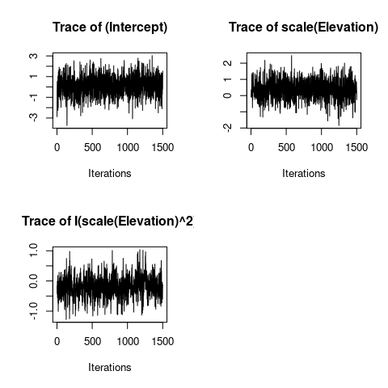
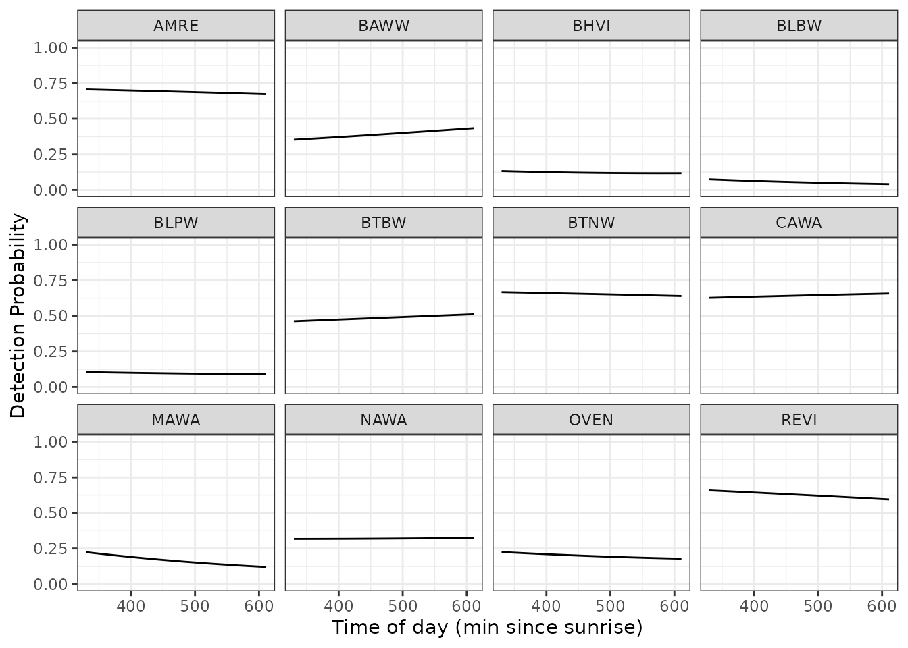
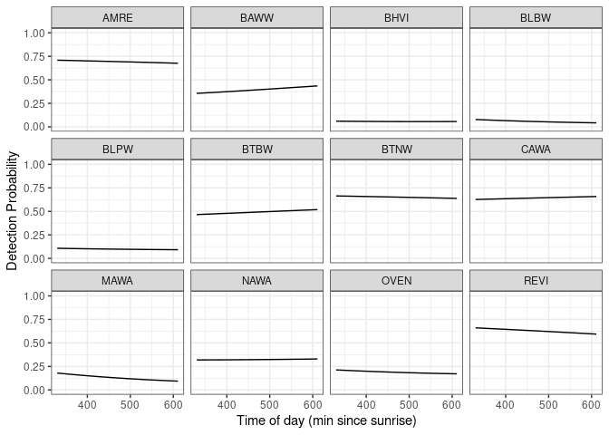
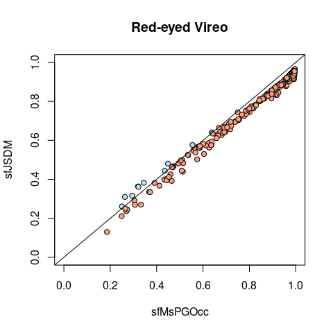
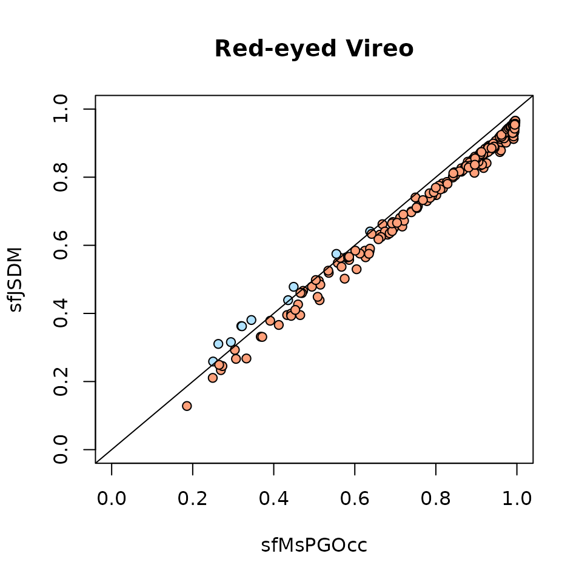

spOccupancy
vignettes/factorModels.Rmd
factorModels.RmdThis vignette provides worked examples for fitting joint species distribution models in the spOccupancy R package (Doser et al. 2021). Joint species distribution models (JSDMs) are a series of regression-based approaches that explicitly accommodate residual species correlations (Latimer et al. 2009; Ovaskainen, Hottola, and Siitonen 2010). spOccupancy provides a series of functions that account for various combinations of the three major complexities often encountered in multi-species detection-nondetection data: (1) residual species correlations (Ovaskainen, Hottola, and Siitonen 2010), (2) imperfect detection (MacKenzie et al. 2002), and (3) spatial autocorrelation (Finley, Banerjee, and McRoberts 2009). In this vignette, we will provide step by step examples on how to fit the following models:
lfMsPGOcc() that accommodates residual species correlations and imperfect detection.sfMsPGOcc() that accommodates residual species correlations, imperfect detection, and spatial autocorrelation.sfJSDM() that accommodates residual species correlations and spatial autocorrelation.lfJSDM() that accommodates residual species correlations.For a detailed vignette on non-spatial and spatial multi-species occupancy models that do not account for residual species correlations, see the introductory spOccupancy vignette.
As with all models implemented in spOccupancy, we use Pólya-Gamma data augmentation for computational efficiency (Polson, Scott, and Windle 2013). Here we provide a brief description of each model, with full statistical details provided on the Gibbs sampler implementations of the models in Appendix S2. In addition to fitting each model, we will show how spOccupancy provides functionality for posterior predictive checks as a Goodness of Fit assessment, model comparison and assessment using the Widely Applicable Information Criterion (WAIC), k-fold cross-validation, and out-of-sample predictions using standard R helper functions (e.g., predict()).
Below, we first load the spOccupancy package, the coda package for some additional MCMC diagnostics, as well as the stars and ggplot2 packages to create some basic plots of our results. We also set a seed so you can reproduce the same results we do.
As an example data set throughout this vignette, we will use data from twelve foliage-gleaning bird species collected from point count surveys at Hubbard Brook Experimental Forest (HBEF) in New Hampshire, USA. Specific details on the data set, which is just a small subset from a long-term survey, are available on the Hubbard Brook website and Doser et al. (2022). The data are provided as part of the spOccupancy package and are loaded with data(hbef2015). Point count surveys were conducted at 373 sites over three replicates, each of 10 minutes in length and with a detection radius of 100m. In the data set provided here, we converted these data to detection-nondetection data. Some sites were not visited for all three replicates. Additional information on the data set (including individual species in the data set) can be viewed in the man page using help(hbef2015).
List of 4
$ y : num [1:12, 1:373, 1:3] 0 0 0 0 0 1 0 0 0 0 ...
..- attr(*, "dimnames")=List of 3
.. ..$ : chr [1:12] "AMRE" "BAWW" "BHVI" "BLBW" ...
.. ..$ : chr [1:373] "1" "2" "3" "4" ...
.. ..$ : chr [1:3] "1" "2" "3"
$ occ.covs: num [1:373, 1] 475 494 546 587 588 ...
..- attr(*, "dimnames")=List of 2
.. ..$ : NULL
.. ..$ : chr "Elevation"
$ det.covs:List of 2
..$ day: num [1:373, 1:3] 156 156 156 156 156 156 156 156 156 156 ...
..$ tod: num [1:373, 1:3] 330 346 369 386 409 425 447 463 482 499 ...
$ coords : num [1:373, 1:2] 280000 280000 280000 280001 280000 ...
..- attr(*, "dimnames")=List of 2
.. ..$ : chr [1:373] "1" "2" "3" "4" ...
.. ..$ : chr [1:2] "X" "Y"
# Species codes
sp.names <- rownames(hbef2015$y)The object hbef2015 is a list comprised of the detection-nondetection data (y), covariates on the occurrence portion of the model (occ.covs), covariates on the detection portion of the model (det.covs), and the spatial coordinates of each site (coords) for use in spatial occupancy models and in plotting. Note that spOccupancy functions assume the spatial coordinates are specified in a projected coordinate system. This list is the format required for input to spOccupancy model functions. hbef2015 contains data on 12 species in the three-dimensional array y, where the dimensions of y correspond to species (12), sites (373), and replicates (3).
Let \(z_{i, j}\) be the true presence (1) or absence (0) of some species \(i\) at site \(j\) for a total of \(i = 1, \dots, N\) species and \(j = 1, \dots, J\) sites. For our HBEF example, \(N = 12\) and \(J = 373\). We assume \(z_{i, j}\) arises from a Bernoulli process following
\[\begin{equation} \begin{split} &z_{i, j} \sim \text{Bernoulli}(\psi_{i, j}), \\ &\text{logit}(\psi_{i, j}) = \boldsymbol{x}^{\top}_{j} \boldsymbol{\beta}_i + \text{w}^*_{i, j}, \end{split} \end{equation}\]
where \(\psi_{i, j}\) is the probability of occurrence of species \(i\) at site \(j\), which is a function of site-specific covariates \(\boldsymbol{X}\), a vector of species-specific regression coefficients (\(\boldsymbol{\beta}_i\)) for those covariates, and a latent process \(\text{w}^*_{i, j}\). We incorporate residual species correlations through the formulation of the latent process \(\text{w}^*_{i, j}\). We use a factor modeling approach, which is a dimension reduction technique that can account for correlations among a large number of species without a massive computational cost (Hogan and Tchernis 2004). Specifically, we decompose \(\text{w}^*_{i, j}\) into a linear combination of \(q\) latent variables (i.e., factors) and their associated species-specific coefficients (i.e., factor loadings). Thus, we have
\[\begin{equation} \text{w}^*_{i, j} = \boldsymbol{\lambda}_i^\top\textbf{w}_j, \end{equation}\]
where \(\boldsymbol{\lambda}_i\) is the \(i\)th row of factor loadings from an \(N \times q\) matrix \(\boldsymbol{\Lambda}\), and \(\textbf{w}_j\) is a \(q \times 1\) vector of independent latent factors at site \(j\). We achieve computational improvements by setting \(q << N\), where often a small number of factors (e.g., \(q = 5\)) is sufficient (Taylor-Rodriguez et al. 2019). For our HBEF example, our community is relatively small (\(N = 12\)) and so we use \(q = 2\) latent factors as our initial choice, and will discuss assessing this choice of the number of factors later in the example. We account for residual species correlations via their individual responses (i.e., loadings) to the \(q\) latent spatial factors. We can envision the latent variables \(\textbf{w}_j\) as unmeasured site-specific covariates that are treated as random variables in the model estimation procedure. For the non-spatial latent factor model, we assign a standard normal prior distribution to the latent factors (i.e., we assume each latent factor is independent and arises from a normal distribution with mean 0 and standard deviation 1).
We envision the species-specific regression coefficients (\(\boldsymbol{\beta}_i\)) as random effects arising from a common community-level distribution:
\[\begin{equation} \boldsymbol{\beta}_i \sim \text{Normal}(\boldsymbol{\mu_{\beta}}, \boldsymbol{T}_{\beta}), \end{equation}\]
where \(\boldsymbol{\mu_{\beta}}\) is a vector of community-level mean effects for each occurrence covariate effect (including the intercept) and \(\boldsymbol{T}_{\beta}\) is a diagonal matrix with diagonal elements \(\boldsymbol{\tau}^2_{\beta}\) that represent the variance of each occurrence covariate effect among species in the community.
We do not directly observe \(z_{i, j}\), but rather we observe an imperfect representation of the latent occurrence process. Let \(y_{i, j, k}\) be the observed detection (1) or nondetection (0) of a species \(i\) of interest at site \(j\) during replicate \(k\) for each of \(k = 1, \dots, K_j\) replicates at each site \(j\). We envision the detection-nondetection data as arising from a Bernoulli process conditional on the true latent occurrence process:
\[\begin{equation} \begin{split} &y_{i, j, k} \sim \text{Bernoulli}(p_{i, j, k}z_{i, j}), \\ &\text{logit}(p_{i, j, k}) = \boldsymbol{v}^{\top}_{i, j, k}\boldsymbol{\alpha}_i, \end{split} \end{equation}\]
where \(p_{i, j, k}\) is the probability of detecting species \(i\) at site \(j\) during replicate \(k\) (given it is present at site \(j\)), which is a function of site and replicate-specific covariates \(\boldsymbol{V}\) and a vector of species-specific regression coefficients (\(\boldsymbol{\alpha}_i\)). Similarly to the occurrence regression coefficients, the species-specific detection coefficients are envisioned as random effects arising from a common community-level distribution:
\[\begin{equation} \boldsymbol{\alpha}_i \sim \text{Normal}(\boldsymbol{\mu_{\alpha}}, \boldsymbol{T}_{\alpha}), \end{equation}\]
where \(\boldsymbol{\mu_{\alpha}}\) is a vector of community-level mean effects for each detection covariate effect (including the intercept) and \(\boldsymbol{T}_{\alpha}\) is a diagonal matrix with diagonal elements \(\boldsymbol{\tau}^2_{\alpha}\) that represent the variability of each detection covariate effect among species in the community.
We assign multivariate normal priors for the community-level occurrence (\(\boldsymbol{\mu_{\beta}}\)) and detection (\(\boldsymbol{\mu_{\alpha}}\)) means, and assign independent inverse-Gamma priors on the community-level occurrence (\(\tau^2_{\beta}\)) and detection (\(\tau^2_{\alpha}\)) variance parameters. To ensure identifiability of the latent factors and factor loadings, we set all elements in the upper triangle of the factor loadings matrix \(\boldsymbol{\Lambda}\) equal to 0 and its diagonal elements equal to 1.
lfMsPGOcc()
The lfMsPGOcc() function fits latent factor multi-species occupancy models. lfMsPGOcc() has the following arguments:
lfMsPGOcc(occ.formula, det.formula, data, inits, priors, n.factors,
n.samples, n.omp.threads = 1, verbose = TRUE, n.report = 100,
n.burn = round(.10 * n.samples), n.thin = 1, n.chains = 1,
k.fold, k.fold.threads = 1, k.fold.seed, ...)The first two arguments, occ.formula and det.formula, use standard R model syntax to denote the covariates to be included in the occurrence and detection portions of the model, respectively. We only specify the right hand side of the formula. We can include random intercepts in both the occurrence and detection portions of the model using lme4 syntax (Bates et al. 2015). The names of variables given in the formulas should correspond to those found in data, which is a list consisting of the following tags: y (detection-nondetection data), occ.covs (occurrence covariates), det.covs (detection covariates), and coords (spatial coordinates of sites). y is a three-dimensional array with dimensions corresponding to species, sites, and replicates, occ.covs is a matrix or data frame with site-specific covariate values, and det.covs is a list with each list element corresponding to a covariate to include in the detection portion of the model. Covariates on detection can vary by site and/or survey, and so these covariates may be specified as a site by survey matrix for survey-level covariates or as a one-dimensional vector for survey level covariates. The hbef2015 list is already in the required format. For our example, we will model species-specific occurrence as a function of linear and quadratic elevation, and will include three observational covariates (linear and quadratic day of survey, time of day of survey) on the detection portion of the model. We standardize all covariates by using the scale() function in our model specification, and use the I() function to specify quadratic effects.
occ.formula <- ~ scale(Elevation) + I(scale(Elevation)^2)
det.formula <- ~ scale(day) + scale(tod) + I(scale(day)^2)Next, we will specify the number of latent factors to use in our model. This is not an arbitrary decision, and it is difficult to determine the optimal number of latent factors in the model. While other approaches exist to estimate the “optimal” number of factors directly in the modeling framework (Tikhonov, Duan, et al. 2020; Ovaskainen et al. 2016), these approaches do not allow for interpretability of the latent factors and the latent factor loadings (see Figure 2 in Doser, Finley, Banerjee (2022)). The specific restraints and priors we place on the factor loadings matrix (\(\boldsymbol{\Lambda}\)) in our approach allows for interpretation of the latent factors and the factor loadings, but does not automatically determine the number of factors for optimal predictive performance. Thus, there is a tradeoff between interpretability of the latent factor and factor loadings and optimal predictive performance. In the spOccupancy implementation, we chose to allow for interpretability of the factor and factor loadings at risk of inferior predictive performance if too many or too few factors are specified by the user.
The number of latent factors can range from 1 to \(N\) (the total number of species in the modeled community). Conceptually, choosing the number of factors is similar to performing a Principal Components Analysis and looking at which components explain a large amount of variation. We want to choose the number of factors that explains an adequate amount of variability among species in the community, but we want to keep this number as small as possible to avoid overfitting the model and large model run times. When initially specifying the number of factors, we suggest the following:
In our HBEF example, the community is relatively small (\(N = 12\)) and the species are all quite similar (after all, they are all classified as foliage-gleaning birds). Let’s take a look at the raw probabilities of occurrence from the detection-nondetection data (ignoring imperfect detection) to give an idea of how rare the species are
apply(hbef2015$y, 1, mean, na.rm = TRUE) AMRE BAWW BHVI BLBW BLPW BTBW
0.003616637 0.039783002 0.059674503 0.379746835 0.059674503 0.559674503
BTNW CAWA MAWA NAWA OVEN REVI
0.556057866 0.024412297 0.084990958 0.023508137 0.531645570 0.554249548 It looks like we have some really rare species (e.g., AMRE, NAWA, BAWW) and some pretty common species (e.g., OVEN, REVI, BTBW). Taking all of this in consideration, it makes sense to initially try the model with a small number of factors, and so we will work with \(q = 2\) factors.
# Number of latent factors (q in statistical notation)
n.factors <- 2Because of the restrictions we place on the factor loadings matrix (diagonal elements equal to 1 and upper triangle elements equal to 0), another important modeling decision we need to make is how to order the species in our detection-nondetection array. More specifically, we need to carefully choose the first \(q\) species in the our array, as these are the species that will have restrictions on their factor loadings. While from a theoretical perspective the order of the species will only influence the resulting interpretation of the latent factors and factor loadings matrix and not the model estimates, this decision does have practical implications. We have found that careful consideration of the ordering of species can lead to (1) increased interpretability of the factors and factor loadings; (2) faster model convergence; and (3) improved mixing. Determining the order of the factors is less important when you have an adequate number of observations for all species in the community, but it becomes increasingly important the more rare species you have in your data set. We suggest the following when considering the order of the species in the detection-nondetection array (y):
In our HBEF example, it is clear that there is a set of fairly common species as well as very rare species. This is likely related to the specific elevation these species tend to occurr at as a result of varied habitat requirements. Accordingly, we will reorder the species matrix (hbef2015$y) to place one of the common species first that occurs at relatively moderate elevations (OVEN) and then place a rare species second that tends to occurr at high elevational habitat (BLPW). The order of the remaining \(N - q = 10\) species does not matter. Below we reorder the species following this logic, and then create a new data object hbef.ordered that we will supply to lfMsPGOcc().
# Current species ordering
sp.names [1] "AMRE" "BAWW" "BHVI" "BLBW" "BLPW" "BTBW" "BTNW" "CAWA" "MAWA" "NAWA"
[11] "OVEN" "REVI"
# Reorder species.
sp.ordered <- c('OVEN', 'BLPW', 'AMRE', 'BAWW', 'BHVI', 'BLBW',
'BTBW', 'BTNW', 'CAWA', 'MAWA', 'NAWA', 'REVI')
# Create new detection-nondetection data matrix in the new order
y.new <- hbef2015$y[sp.ordered, , ]
# Create a new data array
hbef.ordered <- hbef2015
# Change the data to the new ordered data
hbef.ordered$y <- y.new
str(hbef.ordered)List of 4
$ y : num [1:12, 1:373, 1:3] 1 0 0 0 0 0 1 0 0 0 ...
..- attr(*, "dimnames")=List of 3
.. ..$ : chr [1:12] "OVEN" "BLPW" "AMRE" "BAWW" ...
.. ..$ : chr [1:373] "1" "2" "3" "4" ...
.. ..$ : chr [1:3] "1" "2" "3"
$ occ.covs: num [1:373, 1] 475 494 546 587 588 ...
..- attr(*, "dimnames")=List of 2
.. ..$ : NULL
.. ..$ : chr "Elevation"
$ det.covs:List of 2
..$ day: num [1:373, 1:3] 156 156 156 156 156 156 156 156 156 156 ...
..$ tod: num [1:373, 1:3] 330 346 369 386 409 425 447 463 482 499 ...
$ coords : num [1:373, 1:2] 280000 280000 280000 280001 280000 ...
..- attr(*, "dimnames")=List of 2
.. ..$ : chr [1:373] "1" "2" "3" "4" ...
.. ..$ : chr [1:2] "X" "Y"Next we specify the initial values in inits and the prior distributions in priors. These arguments are optional, as spOccupancy will set default initial values and prior distributions if these arguments are not specified. If verbose = TRUE, messages will be printed to the screen to indicate what initial values and priors are used by default for each model parameter. Here (and throughout this vignette), we will explicitly specify initial values and priors.
However, we will point out that all models in spOccupancy that use a factor modeling approach can be fairly sensitive to the initial values of the latent factor loadings. This is primarily an issue when there are a large number of rare species. If you encounter difficulties in model convergence when running factor models in spOccupancy across multiple chains, we recommend first running a single chain of the model for a moderate number of iterations until the traceplots look like they are settling around a value (i.e., convergence is closed to being reached). Then extract the estimated mean values for the factor loadings matrix (\(\boldsymbol{\Lambda}\)) and supply these as initial values to the spOccupancy function when running the full model across multiple chains. When running multiple chains when not paying much attention to the initial values, you may see large discrepancies between certain chains with very large Rhat values for the latent factor loadings matrix (and spatial range parameters for spatially-explicit factor models). However, this may not necessarily be a convergence issue. Rather, what may happen is that depending on the initial values, the specific factors in the model may be estimated in a different order. For example, if estimating a model with two latent factors with two chains, the latent factors may correspond to a latitudinal and a longitudinal gradient in the first chain, but in the second chain these factors could be reversed with the first factor corresponding to the longitudinal gradient and the second factor corresponding to the latitudinal gradient. This is because it is only the sum of the product of the factor loadings and factors that influences occurrence probability, and so the specific ordering of the factors may switch depending on (1) the first \(q\) species relationships to the latent factors and (2) the initial values. Thus, we encourage looking at the traceplots of each individual chain for the latent factor loadings (and spatial range parameters if using a spatial factor model). If the chain has an adequately large effective sample size for the parameters and appears to have reached convergence, we then recommend fixing the initial values at the estimated means from the preliminary model run and then running multiple chains to further assess convergence.
In lfMsPGOcc(), we will supply initial values for the following parameters: alpha.comm (community-level detection coefficients), beta.comm (community-level occurrence coefficients), alpha (species-level detection coefficients), beta (species-level occurrence coefficients), tau.sq.beta (community-level occurrence variance parameters), tau.sq.alpha (community-level detection variance parameters), lambda (the species-specific factor loadings), and z (latent occurrence variables for all species). These are all specified in a single list. Initial values for community-level parameters are either vectors of length corresponding to the number of community-level detection or occurrence parameters in the model (including the intercepts) or a single value if all parameters are assigned the same initial values. Initial values for species level regression coefficients are either matrices with the number of rows indicating the number of species, and each column corresponding to a different regression parameter, or a single value if the same initial value is used for all species and parameters. Initial values for the species-specific factor loadings (lambda) are specified as a numeric matrix with \(N\) rows and \(q\) columns, where \(N\) is the number of species and \(q\) is the number of latent factors used in the model. The diagonal elements of the matrix must be 1, and values in the upper triangle must be set to 0 to ensure identifiability of the latent factors. The initial values for the latent occurrence matrix are specified as a matrix with \(N\) rows corresponding to the number of species and \(J\) columns corresponding to the number of sites.
# Number of species
N <- nrow(hbef.ordered$y)
# Initiate all lambda initial values to 0.
lambda.inits <- matrix(0, N, n.factors)
# Set diagonal elements to 1
diag(lambda.inits) <- 1
# Set lower triangular elements to random values from a standard normal distribution
lambda.inits[lower.tri(lambda.inits)] <- rnorm(sum(lower.tri(lambda.inits)))
# Check it out. Note this is also how spOccupancy specifies default
# initial values for lambda.
lambda.inits [,1] [,2]
[1,] 1.00000000 0.00000000
[2,] -0.50219235 1.00000000
[3,] 0.13153117 0.09627446
[4,] -0.07891709 -0.20163395
[5,] 0.88678481 0.73984050
[6,] 0.11697127 0.12337950
[7,] 0.31863009 -0.02931671
[8,] -0.58179068 -0.38885425
[9,] 0.71453271 0.51085626
[10,] -0.82525943 -0.91381419
[11,] -0.35986213 2.31029682
[12,] 0.08988614 -0.43808998
# Create list of initial values.
inits <- list(alpha.comm = 0,
beta.comm = 0,
beta = 0,
alpha = 0,
tau.sq.beta = 1,
tau.sq.alpha = 1,
lambda = lambda.inits,
z = apply(hbef.ordered$y, c(1, 2), max, na.rm = TRUE))Notice that we set initial values of the latent species occurrence (\(z\)) to 1 if there was at least one observation of the species at the given site, and 0 if the species was not detected at that site (this is also the default value spOccupancy will use if initial values for \(z\) are not provided). We set the lower triangular elements of the factor loadings matrix to random values from a standard normal distribution, as we have found these parameters to be relatively insensitive to initial values for this specific data set.
We specify the priors in the priors argument with the following tags: beta.comm.normal (normal prior on the community-level occurrence mean effects), alpha.comm.normal (normal prior on the community-level detection mean effects), tau.sq.beta.ig (inverse-Gamma prior on the community-level occurrence variance parameters), tau.sq.alpha.ig (inverse-Gamma prior on the community-level detection variance parameters). Each tag consists of a list with elements corresponding to the mean and variance for normal priors and scale and shape for inverse-Gamma priors. Values can be specified individually for each parameter or as a single value if the same prior is assigned to all parameters of a given type.
Below we specify normal priors to be relatively vague on the probability scale with a mean of 0 and a variance of 2.72, and specify vague inverse gamma priors on the community-level variance parameters setting both the shape and scale parameters to 0.1.
priors <- list(beta.comm.normal = list(mean = 0, var = 2.72),
alpha.comm.normal = list(mean = 0, var = 2.72),
tau.sq.beta.ig = list(a = 0.1, b = 0.1),
tau.sq.alpha.ig = list(a = 0.1, b = 0.1))Our next step is to specify the number of samples to produce with the MCMC algorithm (n.samples), the length of burn-in (n.burn), the rate at which we want to thin the posterior samples (n.thin), and the number of MCMC chains to run (n.chains). Note that currently spOccupancy runs multiple chains sequentially and does not allow chains to be run simultaneously in parallel across multiple threads. Instead, we allow for within-chain parallelization using the n.omp.threads argument. We can set n.omp.threads to a number greater than 1 and smaller than the number of threads on the computer you are using. Generally, setting n.omp.threads > 1 will not result in decreased run times for non-spatial joint species distribution models in spOccupancy, but can substantially decrease run time when fitting spatially-explicit models (Finley, Datta, and Banerjee 2020). Here we set n.omp.threads = 1.
n.samples <- 5000
n.burn <- 1000
n.thin <- 8
n.chains <- 3We are now nearly set to run the latent factor multi-species occupancy model. The verbose argument is a logical value indicating whether or not MCMC sampler progress is reported to the screen. If verbose = TRUE, sampler progress is reported after every multiple of the specified number of iterations in the n.report argument. We set verbose = TRUE and n.report = 1000 to report progress after every 1000th MCMC iteration. Additionally, the last three arguments of lfMsPGOcc() (and all spOccupancy model fitting functions), k.fold, k.fold.threads, and k.fold.seed, allow us to perform k-fold cross-validation after fitting the model. Here we will not perform k-fold cross-validation, but see the introductory spOccupancy vignette for details and examples of running spOccupancy functions for k-fold cross-validation.
# Approx run time: 78 seconds
out.lfMsPGOcc <- lfMsPGOcc(occ.formula = occ.formula, det.formula = det.formula,
data = hbef.ordered, inits = inits, priors = priors,
n.factors = n.factors, n.samples = n.samples,
n.omp.threads = 1, verbose = TRUE, n.report = 1000,
n.burn = n.burn, n.thin = n.thin, n.chains = n.chains)----------------------------------------
Preparing to run the model
----------------------------------------
----------------------------------------
Model description
----------------------------------------
Latent Factor Multispecies Occupancy Model with Polya-Gamma latent
variable fit with 373 sites and 12 species.
Samples per Chain: 5000
Burn-in: 1000
Thinning Rate: 8
Number of Chains: 3
Total Posterior Samples: 1500
Using 2 latent factors.
Source compiled with OpenMP support and model fit using 1 thread(s).
----------------------------------------
Chain 1
----------------------------------------
Sampling ...
Sampled: 1000 of 5000, 20.00%
-------------------------------------------------
Sampled: 2000 of 5000, 40.00%
-------------------------------------------------
Sampled: 3000 of 5000, 60.00%
-------------------------------------------------
Sampled: 4000 of 5000, 80.00%
-------------------------------------------------
Sampled: 5000 of 5000, 100.00%
----------------------------------------
Chain 2
----------------------------------------
Sampling ...
Sampled: 1000 of 5000, 20.00%
-------------------------------------------------
Sampled: 2000 of 5000, 40.00%
-------------------------------------------------
Sampled: 3000 of 5000, 60.00%
-------------------------------------------------
Sampled: 4000 of 5000, 80.00%
-------------------------------------------------
Sampled: 5000 of 5000, 100.00%
----------------------------------------
Chain 3
----------------------------------------
Sampling ...
Sampled: 1000 of 5000, 20.00%
-------------------------------------------------
Sampled: 2000 of 5000, 40.00%
-------------------------------------------------
Sampled: 3000 of 5000, 60.00%
-------------------------------------------------
Sampled: 4000 of 5000, 80.00%
-------------------------------------------------
Sampled: 5000 of 5000, 100.00%The resulting object out.lfMsPGOcc is a list of class lfMsPGOcc consisting primarily of posterior samples of all community and species-level parameters, as well as some additional objects that are used for summaries, prediction, and model fit/evaluation. We can display a nice summary of these results using the summary() function. When using summary, we can specify the level of parameters we want to summarize. We do this using the argument level, which takes values community, species, or both to print results for community-level parameters, species-level parameters, or all parameters. The default value prints a summary for all model parameters.
summary(out.lfMsPGOcc)
Call:
lfMsPGOcc(occ.formula = occ.formula, det.formula = det.formula,
data = hbef.ordered, inits = inits, priors = priors, n.factors = n.factors,
n.samples = n.samples, n.omp.threads = 1, verbose = TRUE,
n.report = 1000, n.burn = n.burn, n.thin = n.thin, n.chains = n.chains)
Samples per Chain: 5000
Burn-in: 1000
Thinning Rate: 8
Number of Chains: 3
Total Posterior Samples: 1500
Run Time (min): 1.2739
----------------------------------------
Community Level
----------------------------------------
Occurrence Means (logit scale):
Mean SD 2.5% 50% 97.5% Rhat ESS
(Intercept) 0.0983 0.9393 -1.7194 0.1360 1.9742 1.0299 1500
scale(Elevation) 0.3859 0.5727 -0.7515 0.4000 1.4938 1.0078 1297
I(scale(Elevation)^2) -0.2024 0.3304 -0.8804 -0.2076 0.4526 1.0794 396
Occurrence Variances (logit scale):
Mean SD 2.5% 50% 97.5% Rhat ESS
(Intercept) 16.5364 9.1439 6.2711 14.1860 40.7536 1.0342 488
scale(Elevation) 4.3913 2.6404 1.4700 3.7561 10.9150 1.1785 192
I(scale(Elevation)^2) 1.0229 0.7694 0.2342 0.8224 2.9948 1.0663 269
Detection Means (logit scale):
Mean SD 2.5% 50% 97.5% Rhat ESS
(Intercept) -0.7395 0.4376 -1.6115 -0.7384 0.0991 1.0123 919
scale(day) 0.0578 0.0921 -0.1230 0.0555 0.2385 1.0024 1500
scale(tod) -0.0403 0.0778 -0.1958 -0.0396 0.1171 1.0068 1500
I(scale(day)^2) -0.0241 0.0855 -0.1973 -0.0233 0.1449 1.0046 1451
Detection Variances (logit scale):
Mean SD 2.5% 50% 97.5% Rhat ESS
(Intercept) 2.3581 1.3893 0.7984 2.0007 5.9680 1.2190 191
scale(day) 0.0687 0.0444 0.0230 0.0584 0.1812 1.0046 1500
scale(tod) 0.0498 0.0361 0.0174 0.0411 0.1345 1.0294 1500
I(scale(day)^2) 0.0572 0.0383 0.0188 0.0476 0.1492 1.0106 1342
----------------------------------------
Species Level
----------------------------------------
Occurrence (logit scale):
Mean SD 2.5% 50% 97.5% Rhat ESS
(Intercept)-OVEN 2.3819 0.2746 1.8890 2.3693 2.9307 1.0033 1262
(Intercept)-BLPW -5.7981 0.7856 -7.4283 -5.7374 -4.4167 1.0018 324
(Intercept)-AMRE -3.1334 1.5491 -5.6628 -3.3035 0.2687 1.1664 41
(Intercept)-BAWW 3.5527 2.0656 0.4644 3.2926 8.6067 2.2650 43
(Intercept)-BHVI 0.0589 0.8946 -1.3927 -0.0413 1.9872 1.0384 130
(Intercept)-BLBW 3.3122 1.0281 1.9871 3.0715 5.9279 1.0255 111
(Intercept)-BTBW 4.7973 0.8272 3.4016 4.7032 6.6545 1.0311 280
(Intercept)-BTNW 3.1657 0.7288 2.1357 3.0296 5.0666 1.0034 155
(Intercept)-CAWA -2.5220 0.7233 -3.9607 -2.4866 -1.1603 1.0251 123
(Intercept)-MAWA -2.7620 0.5592 -4.0112 -2.7019 -1.7845 1.0678 237
(Intercept)-NAWA -3.7956 0.9032 -5.8622 -3.6998 -2.2654 1.1006 179
(Intercept)-REVI 3.6403 0.6587 2.6577 3.5435 5.1140 1.0827 198
scale(Elevation)-OVEN -1.8300 0.2723 -2.4344 -1.8043 -1.3788 1.0072 867
scale(Elevation)-BLPW 3.1954 0.6998 2.0554 3.1158 4.8313 1.0360 236
scale(Elevation)-AMRE 1.2678 1.0381 -0.4522 1.1464 3.6175 1.1226 155
scale(Elevation)-BAWW -1.1782 1.3752 -4.3842 -0.9053 1.3580 1.5140 42
scale(Elevation)-BHVI 0.3713 0.6421 -1.0379 0.3884 1.6027 1.1416 188
scale(Elevation)-BLBW -0.5649 0.3611 -1.4759 -0.4963 -0.0543 1.0547 128
scale(Elevation)-BTBW -0.5976 0.2290 -1.0939 -0.5782 -0.1876 1.0126 865
scale(Elevation)-BTNW 0.8977 0.4053 0.2703 0.8343 1.8792 1.0064 303
scale(Elevation)-CAWA 2.4264 0.9637 1.0664 2.2803 4.8781 1.0918 88
scale(Elevation)-MAWA 2.3958 0.5101 1.5349 2.3516 3.5091 1.0115 316
scale(Elevation)-NAWA 1.4823 0.4991 0.6339 1.4355 2.6224 1.0263 309
scale(Elevation)-REVI -2.4054 0.7792 -4.3578 -2.2740 -1.2449 1.1294 158
I(scale(Elevation)^2)-OVEN -0.4932 0.2057 -0.8738 -0.5086 -0.0524 1.0010 1128
I(scale(Elevation)^2)-BLPW 1.0555 0.4565 0.1176 1.0792 1.9069 1.0370 468
I(scale(Elevation)^2)-AMRE -0.8837 0.7393 -2.4072 -0.8233 0.4487 1.1940 135
I(scale(Elevation)^2)-BAWW -1.0515 0.8698 -2.4716 -1.1552 1.0262 1.7579 64
I(scale(Elevation)^2)-BHVI 0.7924 0.7444 -0.2617 0.6347 2.6085 1.0712 103
I(scale(Elevation)^2)-BLBW -0.7275 0.2628 -1.3234 -0.6884 -0.2929 1.0035 286
I(scale(Elevation)^2)-BTBW -1.3390 0.2649 -1.9159 -1.3090 -0.8928 1.0247 357
I(scale(Elevation)^2)-BTNW -0.1502 0.2229 -0.5672 -0.1520 0.2983 1.0044 988
I(scale(Elevation)^2)-CAWA -0.5121 0.5531 -1.5695 -0.5374 0.6275 1.0623 194
I(scale(Elevation)^2)-MAWA 0.5407 0.3595 -0.1331 0.5284 1.2832 1.0483 582
I(scale(Elevation)^2)-NAWA 0.4177 0.3460 -0.2477 0.4159 1.1289 1.0067 644
I(scale(Elevation)^2)-REVI -0.0398 0.4435 -0.7662 -0.0729 0.9455 1.0730 197
Detection (logit scale):
Mean SD 2.5% 50% 97.5% Rhat ESS
(Intercept)-OVEN 0.8165 0.1196 0.5951 0.8124 1.0628 1.0010 1363
(Intercept)-BLPW -0.4724 0.2635 -0.9964 -0.4683 0.0273 1.0105 1500
(Intercept)-AMRE -2.4870 1.2526 -4.9511 -2.3714 -0.2973 1.2739 34
(Intercept)-BAWW -2.8617 0.3271 -3.4228 -2.8892 -2.1637 1.7479 32
(Intercept)-BHVI -2.2621 0.2915 -2.8154 -2.2785 -1.6644 1.0479 94
(Intercept)-BLBW -0.0662 0.1266 -0.3095 -0.0680 0.1844 1.0029 389
(Intercept)-BTBW 0.6475 0.1063 0.4383 0.6488 0.8676 1.0051 1500
(Intercept)-BTNW 0.5803 0.1166 0.3545 0.5766 0.8116 1.0030 1291
(Intercept)-CAWA -1.6942 0.5870 -2.8377 -1.6788 -0.6573 1.0555 111
(Intercept)-MAWA -0.7661 0.2227 -1.2077 -0.7739 -0.3237 1.0003 887
(Intercept)-NAWA -1.4381 0.4353 -2.2542 -1.4329 -0.6062 1.0764 436
(Intercept)-REVI 0.5441 0.1072 0.3404 0.5427 0.7570 1.0037 1500
scale(day)-OVEN -0.0733 0.0734 -0.2161 -0.0715 0.0663 1.0002 1500
scale(day)-BLPW 0.0673 0.1576 -0.2373 0.0685 0.3704 1.0262 1500
scale(day)-AMRE 0.0417 0.2338 -0.4395 0.0431 0.4862 0.9999 1500
scale(day)-BAWW 0.2223 0.1452 -0.0539 0.2166 0.5204 1.0036 1142
scale(day)-BHVI 0.2027 0.1235 -0.0302 0.2036 0.4369 1.0012 1500
scale(day)-BLBW -0.2200 0.0680 -0.3554 -0.2200 -0.0909 1.0142 1500
scale(day)-BTBW 0.2695 0.0694 0.1320 0.2708 0.4074 1.0004 1500
scale(day)-BTNW 0.1479 0.0663 0.0155 0.1498 0.2758 1.0063 1500
scale(day)-CAWA -0.0173 0.1730 -0.3621 -0.0167 0.3156 1.0277 1500
scale(day)-MAWA 0.1066 0.1230 -0.1337 0.1044 0.3420 0.9999 1500
scale(day)-NAWA 0.0150 0.1769 -0.3379 0.0168 0.3596 0.9993 1500
scale(day)-REVI -0.0728 0.0678 -0.2024 -0.0740 0.0558 1.0059 1347
scale(tod)-OVEN -0.0424 0.0718 -0.1859 -0.0420 0.1030 1.0002 1500
scale(tod)-BLPW 0.0924 0.1429 -0.1794 0.0861 0.3785 0.9999 1659
scale(tod)-AMRE -0.0429 0.2246 -0.4729 -0.0417 0.4225 1.0092 1500
scale(tod)-BAWW -0.1761 0.1326 -0.4448 -0.1735 0.0728 1.0033 1272
scale(tod)-BHVI -0.0519 0.1133 -0.2855 -0.0506 0.1619 0.9995 1500
scale(tod)-BLBW 0.0542 0.0664 -0.0807 0.0544 0.1840 1.0025 1500
scale(tod)-BTBW -0.0324 0.0667 -0.1605 -0.0314 0.0960 1.0060 1790
scale(tod)-BTNW 0.0361 0.0645 -0.0839 0.0371 0.1600 1.0001 1076
scale(tod)-CAWA -0.2184 0.1691 -0.5704 -0.2047 0.0911 1.0062 1500
scale(tod)-MAWA 0.0083 0.1122 -0.2102 0.0058 0.2340 1.0011 1673
scale(tod)-NAWA -0.0854 0.1630 -0.4101 -0.0857 0.2299 1.0072 1500
scale(tod)-REVI -0.0742 0.0648 -0.2004 -0.0768 0.0493 1.0034 1624
I(scale(day)^2)-OVEN 0.0203 0.0907 -0.1509 0.0193 0.1943 1.0007 1500
I(scale(day)^2)-BLPW 0.2047 0.1879 -0.1301 0.1994 0.5952 1.0117 1500
I(scale(day)^2)-AMRE -0.1214 0.2292 -0.6184 -0.1070 0.2963 1.0024 1500
I(scale(day)^2)-BAWW -0.0338 0.1467 -0.3225 -0.0290 0.2552 1.0440 975
I(scale(day)^2)-BHVI 0.0673 0.1322 -0.1893 0.0672 0.3244 0.9997 1439
I(scale(day)^2)-BLBW -0.1737 0.0777 -0.3240 -0.1747 -0.0190 0.9994 1500
I(scale(day)^2)-BTBW -0.0552 0.0795 -0.2172 -0.0538 0.0984 1.0097 1500
I(scale(day)^2)-BTNW -0.0602 0.0812 -0.2189 -0.0581 0.1016 1.0039 1500
I(scale(day)^2)-CAWA -0.0277 0.1841 -0.4067 -0.0193 0.3241 1.0087 1500
I(scale(day)^2)-MAWA 0.0108 0.1393 -0.2647 0.0095 0.2861 1.0019 1458
I(scale(day)^2)-NAWA -0.1359 0.1890 -0.5249 -0.1284 0.2144 0.9994 1500
I(scale(day)^2)-REVI 0.0411 0.0789 -0.1198 0.0414 0.1954 1.0057 1500We see the summary() function displays the posterior mean, standard deviation, and posterior quantiles (2.5%, 50%, and 97.5%) for a quick summarization of model findings, with all summaries of parameters on the logit scale. Note that all spOccupancy summary() functions have a quantiles argument where you can supply the specific quantiles you want to be displayed in the summary output (by default, this is set to quantiles = c(0.025, 0.5, 0.975)). Looking at the community-level parameters, we see there is large variation in average occurrence (i.e., the occurrence intercept) across the study region, and more moderate variation in the effect of elevation on occurrence of the 12 bird species across the region. On average, bird occurrence in the community tends to peak at mid-level elevations (i.e., the community-level quadratic effect of elevation is negative).
Additionally, summary() returns Rhat (the Gelman-Rubin diagnostic; Brooks and Gelman (1998)) as well as the effective sample size (ESS) for convergence assessments. Here we see most Rhat values are less than 1.1 and the ESS values are sufficiently large. For a complete analysis, we would run the model for longer to ensure all Rhat values were less than 1.1 and ESS values were sufficiently large. Further, we can use the coda::plot() function to plot traceplots of the individual model parameters that are contained in the resulting lfMsPGOcc object. All posterior samples are stored in objects that end in “samples” in the resulting out.lfMsPGOcc object.
# Check out traceplot of the community-level occurrence means.
plot(out.lfMsPGOcc$beta.comm.samples, density = FALSE)
The summary() function does not present any information on the latent factor loadings or latent factors, but the full posterior samples are available in the lambda.samples and w.samples tags in the out.lfMsPGOcc object, respectively. Below we display the posterior summaries of the latent factor loadings.
summary(out.lfMsPGOcc$lambda.samples)
Iterations = 1:1500
Thinning interval = 1
Number of chains = 1
Sample size per chain = 1500
1. Empirical mean and standard deviation for each variable,
plus standard error of the mean:
Mean SD Naive SE Time-series SE
OVEN-1 1.000000 0.0000 0.00000 0.00000
BLPW-1 -0.882363 0.4511 0.01165 0.02217
AMRE-1 -0.637875 0.7588 0.01959 0.05350
BAWW-1 0.024814 0.7766 0.02005 0.05943
BHVI-1 -1.716477 0.6326 0.01633 0.04218
BLBW-1 -0.067492 0.6211 0.01604 0.05822
BTBW-1 1.496820 0.4924 0.01271 0.02859
BTNW-1 1.021993 0.4880 0.01260 0.03120
CAWA-1 -0.645987 0.5674 0.01465 0.04594
MAWA-1 -1.932342 0.5223 0.01349 0.03154
NAWA-1 -1.657577 0.6200 0.01601 0.04169
REVI-1 0.731117 0.4818 0.01244 0.03350
OVEN-2 0.000000 0.0000 0.00000 0.00000
BLPW-2 1.000000 0.0000 0.00000 0.00000
AMRE-2 0.008694 1.0353 0.02673 0.12548
BAWW-2 0.001111 0.9166 0.02367 0.08514
BHVI-2 0.226287 0.8916 0.02302 0.08868
BLBW-2 0.189532 1.0451 0.02698 0.12456
BTBW-2 -0.201146 0.6622 0.01710 0.04808
BTNW-2 -0.079416 0.9649 0.02491 0.10007
CAWA-2 -0.225772 0.9260 0.02391 0.10478
MAWA-2 0.160195 0.6962 0.01798 0.07025
NAWA-2 0.012736 0.9140 0.02360 0.11989
REVI-2 0.071562 0.7949 0.02052 0.07954
2. Quantiles for each variable:
2.5% 25% 50% 75% 97.5%
OVEN-1 1.0000 1.0000 1.000e+00 1.0000 1.00000
BLPW-1 -1.7738 -1.1818 -8.703e-01 -0.5789 -0.03538
AMRE-1 -2.1539 -1.1327 -6.248e-01 -0.1693 0.94785
BAWW-1 -1.5394 -0.4532 6.063e-02 0.5014 1.49338
BHVI-1 -2.9867 -2.1184 -1.722e+00 -1.3356 -0.34155
BLBW-1 -1.4868 -0.4116 -4.060e-02 0.2989 1.11847
BTBW-1 0.6056 1.1460 1.486e+00 1.8326 2.49709
BTNW-1 0.1507 0.6859 9.871e-01 1.3286 2.09466
CAWA-1 -1.9103 -0.9899 -6.086e-01 -0.2511 0.41199
MAWA-1 -3.0176 -2.2753 -1.890e+00 -1.5646 -1.03734
NAWA-1 -3.0121 -2.0421 -1.616e+00 -1.2145 -0.57469
REVI-1 -0.1109 0.3913 6.897e-01 1.0115 1.78439
OVEN-2 0.0000 0.0000 0.000e+00 0.0000 0.00000
BLPW-2 1.0000 1.0000 1.000e+00 1.0000 1.00000
AMRE-2 -2.0837 -0.7007 3.519e-05 0.7192 2.06135
BAWW-2 -1.7059 -0.6712 3.792e-03 0.6437 1.80803
BHVI-2 -1.7020 -0.3498 2.549e-01 0.8181 1.95112
BLBW-2 -1.9739 -0.4545 2.906e-01 0.9197 1.99340
BTBW-2 -1.4853 -0.6514 -2.150e-01 0.2411 1.11520
BTNW-2 -2.0424 -0.6893 -5.008e-02 0.5353 1.81312
CAWA-2 -2.1012 -0.8626 -2.003e-01 0.4129 1.59162
MAWA-2 -1.2693 -0.3094 1.727e-01 0.6293 1.53020
NAWA-2 -1.7374 -0.6092 -7.732e-03 0.6351 1.83879
REVI-2 -1.4076 -0.4847 6.178e-02 0.5960 1.72262The latent factor loadings and latent factors can provide information on the additional environmental drivers of species occurrence patterns, and what species are respondingly similarly to these environmental gradients. See Figure 2 in Doser, Finley, Banerjee (2022) for an example using North American Breeding Bird Survey data.
As previously discussed, determining the number of factors to include in the model is not straightforward. However, looking at the posterior summaries of the latent factor loadings can provide information on how many factors are necessary for the given data set. In particular, we can look at the posterior mean or median of the latent factor loadings for each factor. If the factor loadings for all species are very close to zero for a given factor, that suggests that factor is not an important driver of species-specific occurrence across space, and thus you may consider removing it from the model. Additionally, we can look at the 95% credible intervals, and if the 95% credible intervals for the factor loadings of all species for a specific factor all contain zero this is further support to reduce the number of factors in the model. In our HBEF example, we see the factor loadings for the second factor for all species are very close to zero, and zero is contained in all 95% credible intervals. On the other hand, the estimated factor loadings for the first factor range from significantly positive to significantly negative values for different species, indicating it is an important driver of occurrence across space. Given these findings, we refit the model below with only a single latent factor. Note also that we fit the model with default initial values and priors, and when we set verbose = TRUE this information is clearly printed out to the screen.
# Use default initial values and priors
# Approx. run time: 75 seconds
out.lfMsPGOcc.2 <- lfMsPGOcc(occ.formula = occ.formula, det.formula = det.formula,
data = hbef.ordered, n.factors = 1, n.samples = n.samples,
n.omp.threads = 1, verbose = TRUE, n.report = 1000,
n.burn = n.burn, n.thin = n.thin, n.chains = n.chains)----------------------------------------
Preparing to run the model
----------------------------------------No prior specified for beta.comm.normal.
Setting prior mean to 0 and prior variance to 2.72No prior specified for alpha.comm.normal.
Setting prior mean to 0 and prior variance to 2.72No prior specified for tau.sq.beta.ig.
Setting prior shape to 0.1 and prior scale to 0.1No prior specified for tau.sq.alpha.ig.
Setting prior shape to 0.1 and prior scale to 0.1z is not specified in initial values.
Setting initial values based on observed databeta.comm is not specified in initial values.
Setting initial values to random values from the prior distributionalpha.comm is not specified in initial values.
Setting initial values to random values from the prior distributiontau.sq.beta is not specified in initial values.
Setting initial values to random values between 0.5 and 10tau.sq.alpha is not specified in initial values.
Setting initial values to random values between 0.5 and 10beta is not specified in initial values.
Setting initial values to random values from the community-level normal distributionalpha is not specified in initial values.
Setting initial values to random values from the community-level normal distributionlambda is not specified in initial values.
Setting initial values of the lower triangle to random values from a standard normal----------------------------------------
Model description
----------------------------------------
Latent Factor Multispecies Occupancy Model with Polya-Gamma latent
variable fit with 373 sites and 12 species.
Samples per Chain: 5000
Burn-in: 1000
Thinning Rate: 8
Number of Chains: 3
Total Posterior Samples: 1500
Using 1 latent factors.
Source compiled with OpenMP support and model fit using 1 thread(s).
----------------------------------------
Chain 1
----------------------------------------
Sampling ...
Sampled: 1000 of 5000, 20.00%
-------------------------------------------------
Sampled: 2000 of 5000, 40.00%
-------------------------------------------------
Sampled: 3000 of 5000, 60.00%
-------------------------------------------------
Sampled: 4000 of 5000, 80.00%
-------------------------------------------------
Sampled: 5000 of 5000, 100.00%
----------------------------------------
Chain 2
----------------------------------------
Sampling ...
Sampled: 1000 of 5000, 20.00%
-------------------------------------------------
Sampled: 2000 of 5000, 40.00%
-------------------------------------------------
Sampled: 3000 of 5000, 60.00%
-------------------------------------------------
Sampled: 4000 of 5000, 80.00%
-------------------------------------------------
Sampled: 5000 of 5000, 100.00%
----------------------------------------
Chain 3
----------------------------------------
Sampling ...
Sampled: 1000 of 5000, 20.00%
-------------------------------------------------
Sampled: 2000 of 5000, 40.00%
-------------------------------------------------
Sampled: 3000 of 5000, 60.00%
-------------------------------------------------
Sampled: 4000 of 5000, 80.00%
-------------------------------------------------
Sampled: 5000 of 5000, 100.00%The spOccupancy function ppcOcc() performs a posterior predictive check for all spOccupancy model objects as an assessment of Goodness of Fit (GoF). The key idea of GoF testing is that a good model should generate data that closely align with the observed data. If there are large differences in the observed data from the model-generated data, our model is likely not very useful (Hooten and Hobbs 2015). We can use the ppcOcc() and summary() functions to generate a Bayesian p-value as a quick assessment of model fit. A Bayesian p-value that hovers around 0.5 indicates adequate model fit, while values less than 0.1 or greater than 0.9 suggest our model does not fit the data well. ppcOcc will return an overall Bayesian p-value for the entire community, as well as an individual Bayesian p-value for each species. See the introductory spOccupancy vignette and the ppcOcc() help page for additional details. Below we perform a posterior predictive check with the Freeman-Tukey statistic, grouping the data by individual sites.
# Approx run time: 30 seconds
ppc.out <- ppcOcc(out.lfMsPGOcc.2, fit.stat = 'freeman-tukey', group = 1)Currently on species 1 out of 12Currently on species 2 out of 12Currently on species 3 out of 12Currently on species 4 out of 12Currently on species 5 out of 12Currently on species 6 out of 12Currently on species 7 out of 12Currently on species 8 out of 12Currently on species 9 out of 12Currently on species 10 out of 12Currently on species 11 out of 12Currently on species 12 out of 12
# Calculate Bayesian p-values
summary(ppc.out)
Call:
ppcOcc(object = out.lfMsPGOcc.2, fit.stat = "freeman-tukey",
group = 1)
Samples per Chain: 5000
Burn-in: 1000
Thinning Rate: 8
Number of Chains: 3
Total Posterior Samples: 1500
----------------------------------------
Community Level
----------------------------------------
Bayesian p-value: 0.4899
----------------------------------------
Species Level
----------------------------------------
OVEN Bayesian p-value: 0.524
BLPW Bayesian p-value: 0.6493
AMRE Bayesian p-value: 0.5187
BAWW Bayesian p-value: 0.5073
BHVI Bayesian p-value: 0.7027
BLBW Bayesian p-value: 0.2347
BTBW Bayesian p-value: 0.5627
BTNW Bayesian p-value: 0.3047
CAWA Bayesian p-value: 0.41
MAWA Bayesian p-value: 0.4187
NAWA Bayesian p-value: 0.492
REVI Bayesian p-value: 0.5547
Fit statistic: freeman-tukey Here, our overall Bayesian p-value for the full community is close to 0.5, and the individual species Bayesian p-values also indicate adequate model fit.
The spOccupancy function waicOCC() calculates the Widely Applicable Information Criterion (Watanabe 2010) for all spOccupancy fitted model objects. The WAIC is a useful fully Bayesian information criterion that is adequate for comparing a set of hierarchical models and selecting the best-performing model for final analysis (see the introductory spOccupancy vignette for further details on WAIC implementation in spOccupancy). Smaller values of WAIC indicate a better performing model. Below, we fit a multi-species occupancy model without species correlations using the msPGOcc() function, and subsequently compare the model to the model that does account for species correlations. Syntax for the msPGOcc() function is identical to that for lfMsPGOcc(), with the exception of the n.factors argument no longer being included (since species correlations are not accommodated).
# Approx run time: 71 seconds
out.msPGOcc <- msPGOcc(occ.formula = occ.formula, det.formula = det.formula,
data = hbef.ordered, inits = inits, priors = priors,
n.samples = n.samples, n.omp.threads = 1,
verbose = TRUE, n.report = 1000, n.burn = n.burn,
n.thin = n.thin, n.chains = n.chains)----------------------------------------
Preparing to run the model
----------------------------------------
----------------------------------------
Model description
----------------------------------------
Multispecies Occupancy Model with Polya-Gamma latent
variable fit with 373 sites and 12 species.
Samples per Chain: 5000
Burn-in: 1000
Thinning Rate: 8
Number of Chains: 3
Total Posterior Samples: 1500
Source compiled with OpenMP support and model fit using 1 thread(s).
----------------------------------------
Chain 1
----------------------------------------
Sampling ...
Sampled: 1000 of 5000, 20.00%
-------------------------------------------------
Sampled: 2000 of 5000, 40.00%
-------------------------------------------------
Sampled: 3000 of 5000, 60.00%
-------------------------------------------------
Sampled: 4000 of 5000, 80.00%
-------------------------------------------------
Sampled: 5000 of 5000, 100.00%
----------------------------------------
Chain 2
----------------------------------------
Sampling ...
Sampled: 1000 of 5000, 20.00%
-------------------------------------------------
Sampled: 2000 of 5000, 40.00%
-------------------------------------------------
Sampled: 3000 of 5000, 60.00%
-------------------------------------------------
Sampled: 4000 of 5000, 80.00%
-------------------------------------------------
Sampled: 5000 of 5000, 100.00%
----------------------------------------
Chain 3
----------------------------------------
Sampling ...
Sampled: 1000 of 5000, 20.00%
-------------------------------------------------
Sampled: 2000 of 5000, 40.00%
-------------------------------------------------
Sampled: 3000 of 5000, 60.00%
-------------------------------------------------
Sampled: 4000 of 5000, 80.00%
-------------------------------------------------
Sampled: 5000 of 5000, 100.00%
# Compute WAIC for the the latent factor multi-species occupancy model.
waicOcc(out.lfMsPGOcc.2) elpd pD WAIC
-4354.6047 184.8315 9078.8723
# Compute WAIC for the basic multi-species occupancy model.
waicOcc(out.msPGOcc) elpd pD WAIC
-4531.69679 65.77426 9194.94210 Here, we see the WAIC for the latent factor multi-species occupancy model is substantially lower than the WAIC for the multi-species occupancy model, suggesting that accommodating residual species correlations leads to improved model performance in the foliage-gleaning bird data set.
Finally, we can use the predict() function with all spOccupancy model-fitting functions to generate a series of posterior predictive samples at new locations, given a set of covariates and their spatial locations. spOccupancy supports prediction of both new occurrence values at a set of spatial locations and as of v0.3.0, spOccupancy supports predictions of detection probability over a range of covariate values.
First, we show how to use predict() to create a map of species richness across HBEF. The object hbefElev (which comes as part of the spOccupancy package) contains elevation data at a 30x30m resolution from the National Elevation Dataset across the entire HBEF. We load the data below.
'data.frame': 46090 obs. of 3 variables:
$ val : num 914 916 918 920 922 ...
$ Easting : num 276273 276296 276318 276340 276363 ...
$ Northing: num 4871424 4871424 4871424 4871424 4871424 ...The column val contains the elevation values, while Easting and Northing contain the spatial coordinates of the prediction sites. Below we standardize our new elevation values using the mean and standard deviation of the elevation values we used to fit the data, and then predict occurrence for each species across all 46090 spatial locations. The out.pred object consists of posterior predictive samples of the latent occurrence probability (psi.0.samples) as well as the latent occurrence state (z.0.samples). We can calculate species richness as a derived quantity by summing up the latent occurrence states for each species at each MCMC sample.
# Not run (note this takes a large amount of memory to run).
elev.pred <- (hbefElev$val - mean(hbef2015$occ.covs[, 1])) / sd(hbef2015$occ.covs[, 1])
# Order: intercept, elevation (linear), elevation (quadratic)
X.0 <- cbind(1, elev.pred, elev.pred^2)
# Spatial coordinates
coords.0 <- as.matrix(hbefElev[, c('Easting', 'Northing')])
# type = 'occupancy' specifies prediction of occupancy (or occurrence).
# This is also the default.
# Approximate run time: 30 sec
out.pred <- predict(out.lfMsPGOcc, X.0, coords.0, type = 'occupancy')
str(out.pred)
# Species richness samples
rich.pred <- apply(out.pred$z.0.samples, c(1, 3), sum)
plot.dat <- data.frame(x = hbefElev$Easting,
y = hbefElev$Northing,
rich.mean = apply(rich.pred, 2, mean),
rich.sd = apply(rich.pred, 2, sd))
# Plot species richness of the foliage-gleaning bird community
# across the Hubbard Brook Experimental Forest
dat.stars <- st_as_stars(plot.dat, dims = c('x', 'y'))
ggplot() +
geom_stars(data = dat.stars, aes(x = x, y = y, fill = rich.mean)) +
scale_fill_viridis_c(na.value = 'transparent') +
labs(x = 'Easting', y = 'Northing', fill = '',
title = 'Mean Species Richness') +
theme_bw()Note that when predicting new values using a latent factor multi-species occupancy model (or a latent factor joint species distribution model as we will see with lfJSDM()), we make predictions at both sampled and non-sampled locations using the latent factors. At sampled locations, we directly use the posterior samples from the model fit in the prediction algorithm, which will generally lead to improved predictions at the sampled sites compared to a multi-species model that does not account for species correlations and incorporate these factors. At non-sampled sites, we do not know the value of the latent factors, and so we simply draw random values from a standard normal distribution at each iteration of the posterior predictive sampling algorithm. Because these values are drawn form a normal distribution with a mean of 0, including these predictions of the latent factors at new sites will not change the overall mean estimate of occurrence probability at that site, but it will account for the uncertainty we have in the latent factor values, and thus will fully propagate uncertainty from our model fit to the resulting predictions.
Finally, we can generate predicted values of detection probability across a range of covariate values to generate a marginal response curve for each individual species across any given covariate value. Below we predict and plot the relationships between detection probability and time of day for each of the 12 species, while holding the day of the year at it’s mean value (0).
# Minimum observed time of day
min.tod <- min(hbef2015$det.covs$tod, na.rm = TRUE)
# Maximum
max.tod <- max(hbef2015$det.covs$tod, na.rm = TRUE)
# Generate 100 time of day values between the observed range
J.0 <- 100
tod.pred.vals <- seq(from = min.tod, to = max.tod, length.out = J.0)
# Standardize the new values by the mean and sd of the data
# used to fit the model.
mean.tod <- mean(hbef2015$det.covs$tod, na.rm = TRUE)
sd.tod <- sd(hbef2015$det.covs$tod, na.rm = TRUE)
tod.stand <- (tod.pred.vals - mean.tod) / sd.tod
# Generate covariate matrix for prediction
X.p.0 <- cbind(1, 0, tod.stand, 0)
colnames(X.p.0) <- c('intercept', 'day', 'tod', 'day2')
out.det.pred <- predict(out.lfMsPGOcc, X.p.0, type = 'detection')
str(out.det.pred)List of 2
$ p.0.samples: num [1:1500, 1:12, 1:100] 0.697 0.68 0.717 0.617 0.71 ...
$ call : language predict.lfMsPGOcc(object = out.lfMsPGOcc, X.0 = X.p.0, type = "detection")
- attr(*, "class")= chr "predict.lfMsPGOcc"The p.0.samples tag in the out.det.pred object consists of the posterior predictive samples of detection probability for each species across the 100 generated time of day values. We finally create a marginal response curve for each species using ggplot2.
# Extract the means from the posterior samples and convert to vector
p.0.ests <- c(apply(out.det.pred$p.0.samples, c(2, 3), mean))
p.plot.dat <- data.frame(det.prob = p.0.ests,
sp = rep(sp.names, J.0),
tod = rep(tod.pred.vals, each = N))
ggplot(p.plot.dat, aes(x = tod, y = det.prob)) +
geom_line() +
theme_bw() +
scale_y_continuous(limits = c(0, 1)) +
facet_wrap(vars(sp)) +
labs(x = 'Time of day (min since sunrise)', y = 'Detection Probability') 
The relatively flat lines here for most species indicates that detection probability does not vary to a large extent across the time of day range that is sampled in the data, although there is some apparent variability in the effect across species (e.g., BAWW vs. MAWA).
While the latent factor multi-species occupancy model accounts for species correlations and imperfect detection, it fails to address spatial autocorrelation. The spatial factor multi-species occupancy model is identical to the latent factor multi-species occupancy model (lfMsPGOcc()), except the latent factors are now assumed to arise from a spatial process rather than a standard normal distribution, which accounts for spatial autocorrelation in latent species occurrence. More specifically, each latent factor (now called a spatial factor) \(\textbf{w}_r\) for each \(r = 1, \dots, q\) is modeled using a Nearest Neighbor Gaussian Process (Datta et al. 2016), i.e.,
\[\begin{equation} \text{w}_r(\boldsymbol{s}_j) \sim N(\boldsymbol{0}, \tilde{\boldsymbol{C}}_r(\boldsymbol{\theta}_r)), \end{equation}\]
where \(\tilde{\boldsymbol{C}}_r(\boldsymbol{\theta}_r)\) is the NNGP-derived covariance matrix for the \(r^{\text{th}}\) spatial factor. The vector \(\boldsymbol{\theta}_r\) consists of parameters governing the spatial process according to a spatial correlation function (Banerjee, Carlin, and Gelfand 2014). spOccupancy implements four spatial correlation functions: exponential, spherical, Gaussian, and Matern. For the exponential, spherical, and Gaussian functions, \(\boldsymbol{\theta}_r\) includes a spatial variance parameter, \(\sigma^2_r\), and a spatial range parameter, \(\phi_r\), while the Matern correlation function includes an additional spatial smoothness parameter, \(\nu_r\).
We assume the same priors and identifiability constraints as the latent factor multi-species occupancy model. We assign a uniform prior the spatial range parameters, \(\phi_r\), and the spatial smoothness parameters, \(\nu_r\), if using a Matern correlation function.
sfMsPGOcc
The function sfMsPGOcc() fits spatial factor multi-species occupancy models using Pólya-Gamma data augmentation. sfMsPGOcc() has the following arguments:
sfMsPGOcc(occ.formula, det.formula, data, inits, priors,
tuning, cov.model = 'exponential', NNGP = TRUE,
n.neighbors = 15, search.type = "cb", n.factors,
n.batch, batch.length, accept.rate = 0.43,
n.omp.threads = 1, verbose = TRUE, n.report = 100,
n.burn = round(.10 * n.batch * batch.length),
n.thin = 1, n.chains = 1, k.fold, k.fold.threads = 1,
k.fold.seed = 100, ...){We will walk through each of the arguments to sfMsPGOcc() in the context of our HBEF example. The occurrence (occ.formula) and detection (det.formula) formulas, as well as the list of data (data) follow the same form as we saw in lfMsPGOcc(). We will specify these again below for clarity.
occ.formula <- ~ scale(Elevation) + I(scale(Elevation)^2)
det.formula <- ~ scale(day) + scale(tod) + I(scale(day)^2)
# Remind ourselves what the data look like
str(hbef.ordered)List of 4
$ y : num [1:12, 1:373, 1:3] 1 0 0 0 0 0 1 0 0 0 ...
..- attr(*, "dimnames")=List of 3
.. ..$ : chr [1:12] "OVEN" "BLPW" "AMRE" "BAWW" ...
.. ..$ : chr [1:373] "1" "2" "3" "4" ...
.. ..$ : chr [1:3] "1" "2" "3"
$ occ.covs: num [1:373, 1] 475 494 546 587 588 ...
..- attr(*, "dimnames")=List of 2
.. ..$ : NULL
.. ..$ : chr "Elevation"
$ det.covs:List of 2
..$ day: num [1:373, 1:3] 156 156 156 156 156 156 156 156 156 156 ...
..$ tod: num [1:373, 1:3] 330 346 369 386 409 425 447 463 482 499 ...
$ coords : num [1:373, 1:2] 280000 280000 280000 280001 280000 ...
..- attr(*, "dimnames")=List of 2
.. ..$ : chr [1:373] "1" "2" "3" "4" ...
.. ..$ : chr [1:2] "X" "Y"Following our findings from using lfMsPGOcc(), we will use 1 latent spatial factor.
n.factors <- 1We will next specify the initial values in the inits argument. Just as before, this argument is optional as spOccupancy will by default set the initial values based on the prior distributions. Valid tags for initial values include all the parameters described for the latent factor multi-species occupancy model using lfMsPGOcc() as well as parameters associated with the spatial latent processes. These include: phi (the spatial range parameter) and nu (the spatial smoothness parameter), where the latter is only specified if adopting a Matern covariance function (i.e., cov.model = 'matern'). spOccupancy supports four spatial covariance models (exponential, spherical, gaussian, and matern), which are specified in the cov.model argument. Here we will use an exponential correlation function. When using an exponential correlation function, \(\frac{3}{\phi}\) is the effective range, or the distance at which the residual spatial correlation between two sites drops to 0.05 (Banerjee, Carlin, and Gelfand 2014). As an initial value for the spatial range parameter phi, we compute the mean distance between points in HBEF and then set it equal to 3 divided by this mean distance. Thus, our initial guess for the effective range is the average distance between sites across HBEF. We will set all other initial values to the same values we used for lfMsPGOcc().
# Pair-wise distance between all sites
dist.hbef <- dist(hbef.ordered$coords)
# Exponential correlation model
cov.model <- "exponential"
# Specify all other initial values identical to lfMsPGOcc() from before
# Number of species
N <- nrow(hbef.ordered$y)
# Initiate all lambda initial values to 0.
lambda.inits <- matrix(0, N, n.factors)
# Set diagonal elements to 1
diag(lambda.inits) <- 1
# Set lower triangular elements to random values from a standard normal dist
lambda.inits[lower.tri(lambda.inits)] <- rnorm(sum(lower.tri(lambda.inits)))
# Check it out
lambda.inits [,1]
[1,] 1.00000000
[2,] 0.08726913
[3,] 1.04191535
[4,] -0.57058400
[5,] -1.03868418
[6,] 0.57980601
[7,] -0.91943441
[8,] 1.54189049
[9,] 0.39333145
[10,] 1.75861735
[11,] 2.15505834
[12,] 0.11110001
# Create list of initial values.
inits <- list(alpha.comm = 0,
beta.comm = 0,
beta = 0,
alpha = 0,
tau.sq.beta = 1,
tau.sq.alpha = 1,
lambda = lambda.inits,
phi = 3 / mean(dist.hbef),
z = apply(hbef.ordered$y, c(1, 2), max, na.rm = TRUE))The next three arguments (n.batch, batch.length, and accept.rate) are all related to the Adaptive MCMC sampler used when we fit the model. Updates for the spatial range parameter (and the smoothness parameter if cov.model = 'matern') require the use of a Metropolis-Hastings algorithm. We implement an adaptive Metropolis-Hastings algorithm as discussed in Roberts and Rosenthal (2009). This algorithm adjusts the tuning values for each parameter that requires a Metropolis-Hastings update within the sampler itself. This process results in a more efficient sampler than if we were to fix the tuning parameters prior to fitting the model. The parameter accept.rate is the target acceptance rate for each parameter, and the algorithm will adjust the tuning parameters to hover around this value. The default value is 0.43, which we suggest leaving as is unless you have a good reason to change it. The tuning parameters are updated after a single “batch”. In lfMsPGOcc(), we specified an n.samples argument which consisted of the total number of samples to run each chain of the MCMC. For sfMsPGOcc() (and all spatially-explicit models in spOccupancy), we break up the total number of MCMC samples into a set of “batches”, where each batch has a specific number of samples. We must specify both the total number of batches (n.batch) as well as the number of MCMC samples each batch contains (batch.length). Thus, the total number of MCMC samples is n.batch * batch.length. Typically, we set batch.length = 25 and then play around with n.batch until convergence is reached. We recommend keeping this at 25 unless you have a specific reason to change it. Here we set n.batch = 200 for a total of 5000 MCMC samples in each of 3 chains. We will additionally specify a burn-in period of length 3000 and a thinning rate of 2. Importantly, we also need to specify an initial value for the tuning parameters for the spatial decay and smoothness parameters (if applicable). These values are supplied as input in the form of a list with tags phi and nu. The initial tuning value can be any value greater than 0, but we recommend starting the value out around 0.5. After some initial runs of the model, if you notice the final acceptance rate of a parameter is much larger or smaller than the target acceptance rate (accept.rate), you can then change the initial tuning value to get closer to the target rate. Here we set the initial tuning value for phi to 1 after some initial exploratory runs of the model.
batch.length <- 25
n.batch <- 200
n.burn <- 3000
n.thin <- 2
n.chains <- 3Priors are again specified in a list in the priors argument. We assume uniform priors for the spatial decay parameter phi and smoothness parameter nu (if using the Matern correlation function), with the associated tags phi.unif and nu.unif. The lower and upper bounds of the uniform distribution are passed as a two-element vector for the uniform priors.
Here we use an exponential correlation function, so we only need to specify priors for the spatial decay parameter phi for each of the spatial factors (which in this case is just 1). We recommend determining the bounds of the uniform distribution by computing the smallest distance between sites and the largest distance between sites in the observed data set. We then set the lower bound of the uniform to 3/max and the upper bound to 3/min, where min and max correspond to the predetermined distances between sites. This equates to a vague prior that states that spatial autocorrelation in the spatial factors could only be between sites that are very close to each other, or could span across the entire observed study area. We recommend using these bounds for the prior unless you have prior information about the range of the spatial autocorrelation. The remaining priors are identical to what we saw in lfMsPGOcc(). We use the same priors for all other parameters as those we used for lfMsPGOcc().
min.dist <- min(dist.hbef)
max.dist <- max(dist.hbef)
priors <- list(beta.comm.normal = list(mean = 0, var = 2.72),
alpha.comm.normal = list(mean = 0, var = 2.72),
tau.sq.beta.ig = list(a = 0.1, b = 0.1),
tau.sq.alpha.ig = list(a = 0.1, b = 0.1),
phi.unif = list(3 / max.dist, 3 / min.dist))Importantly, we also need to specify an initial value for the tuning parameters for the spatial decay and smoothness parameters (if applicable). These values are supplied as input in the form of a list with tags phi and nu. The initial tuning value can be any value greater than 0, but we recommend starting the value out around 0.5. After some initial runs of the model, if you notice the final acceptance rate of a parameter is much larger or smaller than the target acceptance rate (accept.rate), you can then change the initial tuning value to get closer to the target rate. Here we set the initial tuning value for phi to 1 after some initial exploratory runs of the model.
tuning <- list(phi = 1)The argument n.omp.threads specifies the number of threads to use for within-chain parallelization, which can greatly decrease run time for spatially-explicit models (Finley, Datta, and Banerjee 2020), while verbose specifies whether or not to print the progress of the sampler. We highly recommend setting verbose = TRUE for all spatial models to ensure the adaptive MCMC is working as you want (and this is the reason for why this is the default for this argument). The argument n.report specifies the interval to report the Metropolis-Hastings sampler acceptance rate. Note that n.report is specified in terms of batches, not the overall number of samples. Below we set n.report = 50, which will result in information on the acceptance rate and tuning parameters every 50th batch (not sample). Ideally, you should see the printed acceptance rate values however around the value supplied to the accept.rate argument (which by default is 0.43). If by the end of the MCMC run you see the values are well below the target acceptance rate, we recommend rerunning the model with a larger initial tuning parameter (higher than the final reported value in the displayed output of model progress). If you see the values are well above the target acceptance rate, we recommend rerunning the model with a smaller initial tuning parameter (smaller than the final reported value).
n.omp.threads <- 1
verbose <- TRUE
n.report <- 50 # Report progress at every 50th batch.The parameters NNGP, n.neighbors, and search.type relate to whether or not you want to fit the model with a Gaussian Process or with NNGP, which is a much more computationally efficient approximation. The argument NNGP is a logical value indicating whether to fit the model with an NNGP (TRUE) or a regular Gaussian Process (FALSE). Currently, sfMsPGOcc() only supports NNGP models, so you will receive an error message if you set NNGP = FALSE that tells you to switch to NNGP = TRUE. We plan to implement these models with a full Gaussian Process in future development. The argument n.neighbors and search.type specify the number of neighbors used in the NNGP and the nearest neighbor search algorithm, respectively, to use for the NNGP model. Generally, the default values of these arguments will be adequate. Datta et al. (2016) showed that setting n.neighbors = 15 is usually sufficient, although for certain data sets a good approximation can be achieved with as few as five neighbors, which could substantially decrease run time for the model. We generally recommend leaving search.type = "cb", as this results in a fast code book nearest neighbor search algorithm. However, details on when you may want to change this are described in Finley, Datta, and Banerjee (2020). We will run an NNGP model using the default value for search.type and setting n.neighbors = 5. Here we choose 5 neighbors because we found in Doser et al. (2021) that estimates from a spatial multi-species occupancy model for this data set were relatively robust to the number of neighbors in the model. Generally, we recommend using the default value of n.neighbors = 15, and if additional decreases in computation time are desired, you can fit the model with n.neighbors = 5 and compare their performance using WAIC and/or k-fold cross-validation.
We now fit the model using sfMsPGOcc() and summarize the results using summary().
# Approx run time: 2 min
out.sfMsPGOcc <- sfMsPGOcc(occ.formula = occ.formula,
det.formula = det.formula,
data = hbef.ordered,
inits = inits,
n.batch = n.batch,
batch.length = batch.length,
accept.rate = 0.43,
priors = priors,
n.factors = n.factors,
cov.model = cov.model,
tuning = tuning,
n.omp.threads = n.omp.threads,
verbose = TRUE,
NNGP = TRUE,
n.neighbors = 5,
n.report = n.report,
n.burn = n.burn,
n.thin = n.thin,
n.chains = n.chains)----------------------------------------
Preparing to run the model
----------------------------------------
----------------------------------------
Building the neighbor list
----------------------------------------
----------------------------------------
Building the neighbors of neighbors list
----------------------------------------
----------------------------------------
Model description
----------------------------------------
Spatial Factor NNGP Multispecies Occupancy Model with Polya-Gamma latent
variable fit with 373 sites and 12 species.
Samples per chain: 5000 (200 batches of length 25)
Burn-in: 3000
Thinning Rate: 2
Number of Chains: 3
Total Posterior Samples: 3000
Using the exponential spatial correlation model.
Using 1 latent spatial factors.
Using 5 nearest neighbors.
Source compiled with OpenMP support and model fit using 1 thread(s).
Adaptive Metropolis with target acceptance rate: 43.0
----------------------------------------
Chain 1
----------------------------------------
Sampling ...
Batch: 50 of 200, 25.00%
Latent Factor Acceptance Tuning
1 16.0 0.60050
-------------------------------------------------
Batch: 100 of 200, 50.00%
Latent Factor Acceptance Tuning
1 20.0 0.37908
-------------------------------------------------
Batch: 150 of 200, 75.00%
Latent Factor Acceptance Tuning
1 52.0 0.29820
-------------------------------------------------
Batch: 200 of 200, 100.00%
----------------------------------------
Chain 2
----------------------------------------
Sampling ...
Batch: 50 of 200, 25.00%
Latent Factor Acceptance Tuning
1 52.0 0.28083
-------------------------------------------------
Batch: 100 of 200, 50.00%
Latent Factor Acceptance Tuning
1 48.0 0.28083
-------------------------------------------------
Batch: 150 of 200, 75.00%
Latent Factor Acceptance Tuning
1 40.0 0.29820
-------------------------------------------------
Batch: 200 of 200, 100.00%
----------------------------------------
Chain 3
----------------------------------------
Sampling ...
Batch: 50 of 200, 25.00%
Latent Factor Acceptance Tuning
1 52.0 0.27527
-------------------------------------------------
Batch: 100 of 200, 50.00%
Latent Factor Acceptance Tuning
1 32.0 0.26982
-------------------------------------------------
Batch: 150 of 200, 75.00%
Latent Factor Acceptance Tuning
1 28.0 0.25924
-------------------------------------------------
Batch: 200 of 200, 100.00%
# Take a look at the resulting object
names(out.sfMsPGOcc) [1] "rhat" "beta.comm.samples" "alpha.comm.samples"
[4] "tau.sq.beta.samples" "tau.sq.alpha.samples" "beta.samples"
[7] "alpha.samples" "lambda.samples" "theta.samples"
[10] "z.samples" "w.samples" "psi.samples"
[13] "like.samples" "X.p" "X.p.re"
[16] "lambda.p" "X.re" "lambda.psi"
[19] "ESS" "X" "y"
[22] "call" "n.samples" "x.names"
[25] "sp.names" "x.p.names" "theta.names"
[28] "type" "coords" "cov.model.indx"
[31] "n.neighbors" "q" "n.post"
[34] "n.thin" "n.burn" "n.chains"
[37] "pRE" "psiRE" "run.time"
summary(out.sfMsPGOcc)
Call:
sfMsPGOcc(occ.formula = occ.formula, det.formula = det.formula,
data = hbef.ordered, inits = inits, priors = priors, tuning = tuning,
cov.model = cov.model, NNGP = TRUE, n.neighbors = 5, n.factors = n.factors,
n.batch = n.batch, batch.length = batch.length, accept.rate = 0.43,
n.omp.threads = n.omp.threads, verbose = TRUE, n.report = n.report,
n.burn = n.burn, n.thin = n.thin, n.chains = n.chains)
Samples per Chain: 5000
Burn-in: 3000
Thinning Rate: 2
Number of Chains: 3
Total Posterior Samples: 3000
Run Time (min): 2.0992
----------------------------------------
Community Level
----------------------------------------
Occurrence Means (logit scale):
Mean SD 2.5% 50% 97.5% Rhat ESS
(Intercept) 0.4138 0.9397 -1.4779 0.3957 2.3251 1.2572 305
scale(Elevation) 0.4409 0.5785 -0.6575 0.4315 1.6466 1.0221 694
I(scale(Elevation)^2) -0.2005 0.3121 -0.8185 -0.2045 0.4300 1.0172 507
Occurrence Variances (logit scale):
Mean SD 2.5% 50% 97.5% Rhat ESS
(Intercept) 15.3672 8.9701 5.2263 13.1667 37.3060 1.1911 194
scale(Elevation) 4.1324 2.8989 1.2564 3.4288 11.5424 1.0062 187
I(scale(Elevation)^2) 1.0268 0.7498 0.2302 0.8291 2.9140 1.0933 159
Detection Means (logit scale):
Mean SD 2.5% 50% 97.5% Rhat ESS
(Intercept) -0.8440 0.5077 -1.8520 -0.8361 0.1299 1.1440 655
scale(day) 0.0538 0.0865 -0.1116 0.0519 0.2276 1.0035 2085
scale(tod) -0.0402 0.0783 -0.2038 -0.0382 0.1106 1.0043 1746
I(scale(day)^2) -0.0245 0.0874 -0.2030 -0.0236 0.1471 1.0071 1849
Detection Variances (logit scale):
Mean SD 2.5% 50% 97.5% Rhat ESS
(Intercept) 3.2253 1.9799 0.9487 2.7714 8.0954 1.6838 91
scale(day) 0.0661 0.0392 0.0237 0.0565 0.1665 1.0074 2360
scale(tod) 0.0513 0.0330 0.0165 0.0425 0.1409 1.0033 1895
I(scale(day)^2) 0.0594 0.0418 0.0182 0.0486 0.1654 1.0049 2009
----------------------------------------
Species Level
----------------------------------------
Occurrence (logit scale):
Mean SD 2.5% 50% 97.5% Rhat ESS
(Intercept)-OVEN 2.2232 0.3314 1.5895 2.2180 2.8748 1.0701 177
(Intercept)-BLPW -5.7697 1.0465 -8.0832 -5.6610 -3.9472 1.0100 107
(Intercept)-AMRE 1.2309 4.6123 -4.2302 -0.2234 10.8491 6.3902 4
(Intercept)-BAWW 3.3036 1.9751 0.3983 3.0504 8.2504 1.6138 28
(Intercept)-BHVI 0.1886 0.7891 -1.2358 0.1418 1.8634 1.0618 94
(Intercept)-BLBW 2.6816 0.5819 1.7909 2.5941 4.0177 1.1033 233
(Intercept)-BTBW 4.8988 0.9606 3.3064 4.8145 7.0738 1.1175 83
(Intercept)-BTNW 2.7775 0.6249 1.9130 2.6695 4.2350 1.1857 93
(Intercept)-CAWA -1.9070 0.7719 -3.1182 -2.0276 -0.0458 1.4897 90
(Intercept)-MAWA -2.9031 0.6689 -4.2598 -2.8512 -1.6852 1.0923 122
(Intercept)-NAWA -2.9662 0.7356 -4.4512 -2.9766 -1.3863 1.0539 130
(Intercept)-REVI 3.2167 0.5093 2.3532 3.1647 4.3385 1.0479 252
scale(Elevation)-OVEN -1.7234 0.3096 -2.3872 -1.7024 -1.1968 1.0083 320
scale(Elevation)-BLPW 3.1076 0.8360 1.8207 2.9639 5.0454 1.1226 83
scale(Elevation)-AMRE 1.0788 1.3709 -1.8998 1.0092 3.8415 1.2556 38
scale(Elevation)-BAWW -1.0660 1.1156 -4.1174 -0.8335 0.4457 1.4923 45
scale(Elevation)-BHVI 0.5318 0.6454 -0.6206 0.4600 1.9835 1.0225 109
scale(Elevation)-BLBW -0.4785 0.2256 -0.9609 -0.4619 -0.0797 1.0268 512
scale(Elevation)-BTBW -0.4066 0.2933 -1.0163 -0.3921 0.1442 1.0263 186
scale(Elevation)-BTNW 0.7903 0.3206 0.2689 0.7513 1.5356 1.0517 272
scale(Elevation)-CAWA 2.4901 1.0073 1.0395 2.3054 4.9912 1.6194 61
scale(Elevation)-MAWA 2.4449 0.6415 1.3712 2.4044 3.8010 1.0154 124
scale(Elevation)-NAWA 1.1467 0.4250 0.4113 1.1183 2.0699 1.0113 258
scale(Elevation)-REVI -2.2433 0.7679 -4.0150 -2.1394 -1.0763 1.0355 86
I(scale(Elevation)^2)-OVEN -0.4673 0.2336 -0.9013 -0.4776 0.0200 1.0079 397
I(scale(Elevation)^2)-BLPW 1.0045 0.5287 -0.0138 0.9963 2.0751 1.0390 183
I(scale(Elevation)^2)-AMRE -0.8195 0.8992 -2.5996 -0.7959 1.0328 1.2683 57
I(scale(Elevation)^2)-BAWW -1.2670 0.6803 -2.6098 -1.2460 0.3018 1.6690 91
I(scale(Elevation)^2)-BHVI 0.6318 0.5286 -0.2078 0.5625 1.9148 1.0919 108
I(scale(Elevation)^2)-BLBW -0.5973 0.1854 -0.9983 -0.5924 -0.2655 1.0772 425
I(scale(Elevation)^2)-BTBW -1.3991 0.3022 -2.0297 -1.3830 -0.8683 1.0601 134
I(scale(Elevation)^2)-BTNW -0.2038 0.2099 -0.6486 -0.1993 0.1901 1.0110 246
I(scale(Elevation)^2)-CAWA -0.3640 0.6941 -1.6325 -0.4155 1.1594 1.2152 89
I(scale(Elevation)^2)-MAWA 0.6933 0.4285 -0.0979 0.6780 1.5865 1.0528 256
I(scale(Elevation)^2)-NAWA 0.3176 0.3450 -0.3511 0.3166 0.9757 1.0241 279
I(scale(Elevation)^2)-REVI 0.0477 0.4042 -0.6370 0.0156 0.9618 1.0113 124
Detection (logit scale):
Mean SD 2.5% 50% 97.5% Rhat ESS
(Intercept)-OVEN 0.8300 0.1164 0.6087 0.8260 1.0617 1.0031 2790
(Intercept)-BLPW -0.4649 0.2634 -0.9933 -0.4538 0.0274 1.0033 2029
(Intercept)-AMRE -3.8784 1.5851 -6.1965 -4.2629 -0.7433 4.1472 7
(Intercept)-BAWW -2.8206 0.3262 -3.4224 -2.8417 -2.1062 1.1753 75
(Intercept)-BHVI -2.2355 0.2699 -2.7663 -2.2290 -1.7087 1.0502 156
(Intercept)-BLBW -0.0464 0.1268 -0.3027 -0.0456 0.2008 1.0321 568
(Intercept)-BTBW 0.6366 0.1073 0.4288 0.6359 0.8542 1.0030 3000
(Intercept)-BTNW 0.5789 0.1133 0.3628 0.5772 0.8085 1.0040 1284
(Intercept)-CAWA -2.0038 0.6100 -3.0334 -2.0647 -0.8061 1.7153 47
(Intercept)-MAWA -0.7535 0.2118 -1.1669 -0.7552 -0.3235 1.0151 1100
(Intercept)-NAWA -1.5087 0.4549 -2.4288 -1.4964 -0.6260 1.1064 215
(Intercept)-REVI 0.5461 0.1089 0.3334 0.5456 0.7645 1.0006 2444
scale(day)-OVEN -0.0758 0.0740 -0.2247 -0.0746 0.0679 1.0025 3000
scale(day)-BLPW 0.0606 0.1553 -0.2413 0.0608 0.3704 1.0011 2751
scale(day)-AMRE 0.0262 0.2355 -0.4381 0.0250 0.4916 1.0044 1213
scale(day)-BAWW 0.2124 0.1417 -0.0597 0.2103 0.4976 1.0014 1276
scale(day)-BHVI 0.1884 0.1215 -0.0517 0.1850 0.4272 1.0086 1858
scale(day)-BLBW -0.2241 0.0677 -0.3617 -0.2226 -0.0929 1.0064 3000
scale(day)-BTBW 0.2702 0.0695 0.1330 0.2690 0.4039 1.0003 2660
scale(day)-BTNW 0.1464 0.0661 0.0163 0.1454 0.2758 1.0022 3000
scale(day)-CAWA -0.0218 0.1746 -0.3657 -0.0192 0.3250 1.0007 2156
scale(day)-MAWA 0.1064 0.1242 -0.1440 0.1053 0.3572 1.0072 2689
scale(day)-NAWA 0.0136 0.1770 -0.3505 0.0130 0.3610 1.0021 2373
scale(day)-REVI -0.0722 0.0677 -0.2047 -0.0725 0.0604 1.0069 3016
scale(tod)-OVEN -0.0413 0.0729 -0.1846 -0.0418 0.1037 1.0061 2723
scale(tod)-BLPW 0.0899 0.1493 -0.1961 0.0901 0.3912 1.0069 2396
scale(tod)-AMRE -0.0206 0.2148 -0.4509 -0.0170 0.4142 1.0006 1033
scale(tod)-BAWW -0.1808 0.1370 -0.4663 -0.1767 0.0821 1.0012 1179
scale(tod)-BHVI -0.0495 0.1120 -0.2736 -0.0477 0.1715 1.0011 1752
scale(tod)-BLBW 0.0573 0.0664 -0.0707 0.0566 0.1904 1.0007 2527
scale(tod)-BTBW -0.0308 0.0662 -0.1650 -0.0294 0.0937 1.0023 2794
scale(tod)-BTNW 0.0374 0.0640 -0.0889 0.0377 0.1623 1.0024 3000
scale(tod)-CAWA -0.2210 0.1682 -0.5842 -0.2132 0.0761 1.0017 1846
scale(tod)-MAWA 0.0110 0.1144 -0.2139 0.0108 0.2333 1.0023 3000
scale(tod)-NAWA -0.0792 0.1596 -0.4079 -0.0747 0.2330 1.0012 2418
scale(tod)-REVI -0.0770 0.0664 -0.2056 -0.0751 0.0508 1.0103 3000
I(scale(day)^2)-OVEN 0.0189 0.0867 -0.1491 0.0182 0.1860 1.0028 2762
I(scale(day)^2)-BLPW 0.2073 0.1868 -0.1405 0.1973 0.5880 1.0091 2382
I(scale(day)^2)-AMRE -0.1300 0.2429 -0.6376 -0.1160 0.3248 1.0090 957
I(scale(day)^2)-BAWW -0.0341 0.1524 -0.3317 -0.0322 0.2650 0.9999 1506
I(scale(day)^2)-BHVI 0.0707 0.1378 -0.2004 0.0691 0.3410 1.0014 1794
I(scale(day)^2)-BLBW -0.1706 0.0797 -0.3288 -0.1698 -0.0155 1.0026 3000
I(scale(day)^2)-BTBW -0.0587 0.0784 -0.2104 -0.0577 0.0919 1.0036 3000
I(scale(day)^2)-BTNW -0.0613 0.0773 -0.2113 -0.0610 0.0841 0.9996 3000
I(scale(day)^2)-CAWA -0.0331 0.1800 -0.3767 -0.0334 0.3204 1.0090 2374
I(scale(day)^2)-MAWA 0.0064 0.1351 -0.2610 0.0068 0.2742 1.0002 3000
I(scale(day)^2)-NAWA -0.1421 0.1833 -0.5126 -0.1381 0.2072 1.0015 2129
I(scale(day)^2)-REVI 0.0383 0.0797 -0.1245 0.0367 0.1953 1.0008 3000
----------------------------------------
Spatial Covariance
----------------------------------------
Mean SD 2.5% 50% 97.5% Rhat ESS
phi-1 0.0023 6e-04 0.0013 0.0023 0.0037 1.0728 112We see pretty adequate convergence and effective sample sizes for the parameters, although we certainly would run the model longer for a full analysis to ensure all Rhat values are less than 1.1. If we compare the community-level parameters from sfMsPGOcc() with those from lfMsPGOcc(), we see their is a fair amount of correspondence between the two models.
Next we summarize the spatial factor loadings
summary(out.sfMsPGOcc$lambda.samples)
Iterations = 1:3000
Thinning interval = 1
Number of chains = 1
Sample size per chain = 3000
1. Empirical mean and standard deviation for each variable,
plus standard error of the mean:
Mean SD Naive SE Time-series SE
OVEN-1 1.0000 0.0000 0.000000 0.00000
BLPW-1 -1.4086 0.5045 0.009210 0.04614
AMRE-1 -0.4813 0.9145 0.016697 0.14416
BAWW-1 -0.1296 0.7035 0.012844 0.07139
BHVI-1 -1.8301 0.6017 0.010985 0.05991
BLBW-1 -0.2936 0.3516 0.006420 0.02705
BTBW-1 1.5974 0.4802 0.008768 0.04102
BTNW-1 0.8370 0.4206 0.007679 0.04157
CAWA-1 -0.7803 0.6066 0.011074 0.07098
MAWA-1 -2.3117 0.4869 0.008890 0.03550
NAWA-1 -1.2409 0.4898 0.008943 0.03818
REVI-1 0.3939 0.2817 0.005143 0.01437
2. Quantiles for each variable:
2.5% 25% 50% 75% 97.5%
OVEN-1 1.0000 1.0000 1.0000 1.00000 1.0000
BLPW-1 -2.4559 -1.7424 -1.3791 -1.05149 -0.5230
AMRE-1 -2.1920 -1.0884 -0.5577 0.11222 1.4148
BAWW-1 -1.5199 -0.5772 -0.1546 0.28082 1.3638
BHVI-1 -3.0779 -2.2152 -1.7996 -1.41289 -0.7257
BLBW-1 -1.0295 -0.5137 -0.2770 -0.06451 0.3682
BTBW-1 0.7241 1.2596 1.5705 1.90856 2.6074
BTNW-1 0.1758 0.5509 0.7753 1.05371 1.8625
CAWA-1 -2.2071 -1.1255 -0.6748 -0.34939 0.1264
MAWA-1 -3.4184 -2.5836 -2.2794 -1.97962 -1.4586
NAWA-1 -2.4027 -1.5085 -1.1926 -0.89590 -0.4276
REVI-1 -0.1318 0.2015 0.3831 0.58346 0.9681Here we see variable responses to the latent spatial factor. In particular, we see that common species (OVEN, BTBW, BTNW, REVI) that occur at low-mid level elevations have a positive coefficent, while more rare species (MAWA, NAWA) have negative values of the coefficient. As we did in Figure 2 of Doser, Finley, Banerjee (2022) for the Breeding Bird Survey data, we could plot the factor loadings and the estimated spatial factor side-by-side to better understand what these effects mean for the specific community of interest.
Analogous to lfMsPGOcc(), we can perform a posterior predictive check using ppcOcc().
# Takes a few seconds to run.
ppc.occ.out <- ppcOcc(out.sfMsPGOcc, 'freeman-tukey', group = 2)Currently on species 1 out of 12Currently on species 2 out of 12Currently on species 3 out of 12Currently on species 4 out of 12Currently on species 5 out of 12Currently on species 6 out of 12Currently on species 7 out of 12Currently on species 8 out of 12Currently on species 9 out of 12Currently on species 10 out of 12Currently on species 11 out of 12Currently on species 12 out of 12
summary(ppc.occ.out)
Call:
ppcOcc(object = out.sfMsPGOcc, fit.stat = "freeman-tukey", group = 2)
Samples per Chain: 5000
Burn-in: 3000
Thinning Rate: 2
Number of Chains: 3
Total Posterior Samples: 3000
----------------------------------------
Community Level
----------------------------------------
Bayesian p-value: 0.5309
----------------------------------------
Species Level
----------------------------------------
OVEN Bayesian p-value: 0.512
BLPW Bayesian p-value: 0.4563
AMRE Bayesian p-value: 0.554
BAWW Bayesian p-value: 0.493
BHVI Bayesian p-value: 0.553
BLBW Bayesian p-value: 0.286
BTBW Bayesian p-value: 0.489
BTNW Bayesian p-value: 0.5073
CAWA Bayesian p-value: 0.594
MAWA Bayesian p-value: 0.8163
NAWA Bayesian p-value: 0.5737
REVI Bayesian p-value: 0.5367
Fit statistic: freeman-tukey Below we compute the WAIC using waicOcc() and compare it to the WAIC for the non-spatial multi-species occupancy model.
waicOcc(out.sfMsPGOcc) elpd pD WAIC
-4352.3203 151.0262 9006.6930
waicOcc(out.lfMsPGOcc.2) elpd pD WAIC
-4354.6047 184.8315 9078.8723 As always, remember there is Monte Carlo error in these numbers, and so the values you receive will be slightly different if you run this on your own machine. The WAIC for the spatial factor model is much smaller than the WAIC for the latent factor model, suggesting that accounting for spatial autocorrelation improves model fit. However, in a complete analysis we should ensure the models fully converge (and we have adequate ESS) before performing any model selection or comparison.
Finally, we can use the predict() function as we saw with lfMsPGOcc() to predict new occurrence or detection probability values given a set of covariates and spatial locations.
Below, we provide code to produce a map of species richness across HBEF, which is exactly analogous to our code for lfMsPGOcc().
# Not run (note this takes a large amount of memory to run).
data(hbefElev)
str(hbefElev)
elev.pred <- (hbefElev$val - mean(hbef.ordered$occ.covs[, 1])) / sd(hbef.ordered$occ.covs[, 1])
# Order: intercept, elevation (linear), elevation (quadratic)
X.0 <- cbind(1, elev.pred, elev.pred^2)
# Spatial coordinates
coords.0 <- as.matrix(hbefElev[, c('Easting', 'Northing')])
# type = 'occupancy' specified prediction of occupancy (or occurrence).
# This is also the default.
# Approximate run time: 30 sec
out.pred <- predict(out.sfMsPGOcc, X.0, coords.0, type = 'occupancy')
str(out.pred)
# Species richness samples
rich.pred <- apply(out.pred$z.0.samples, c(1, 3), sum)
plot.dat <- data.frame(x = hbefElev$Easting,
y = hbefElev$Northing,
rich.mean = apply(rich.pred, 2, mean),
rich.sd = apply(rich.pred, 2, sd))
# Plot species richness of the foliage-gleaning bird community
# across the Hubbard Brook Experimental Forest
dat.stars <- st_as_stars(plot.dat, dims = c('x', 'y'))
ggplot() +
geom_stars(data = dat.stars, aes(x = x, y = y, fill = rich.mean)) +
scale_fill_viridis_c(na.value = 'transparent') +
labs(x = 'Easting', y = 'Northing', fill = '',
title = 'Mean Species Richness') +
theme_bw()Additionally, we can generate predicted values of detection probability across a range of covariate values to generate a marginal response curve for each individual species across any given covariate value. As we saw with lfMsPGOcc(), below we predict and plot the relationships between detection probability and time of day for each of the 12 species, while holding the day of the year at it’s mean value (0).
# Minimum observed time of day
min.tod <- min(hbef2015$det.covs$tod, na.rm = TRUE)
# Maximum
max.tod <- max(hbef2015$det.covs$tod, na.rm = TRUE)
# Generate 100 time of day values between the observed range
J.0 <- 100
tod.pred.vals <- seq(from = min.tod, to = max.tod, length.out = J.0)
mean.tod <- mean(hbef2015$det.covs$tod, na.rm = TRUE)
sd.tod <- sd(hbef2015$det.covs$tod, na.rm = TRUE)
tod.stand <- (tod.pred.vals - mean.tod) / sd.tod
# Generate covariate matrix for prediction
X.p.0 <- cbind(1, 0, tod.stand, 0)
colnames(X.p.0) <- c('intercept', 'day', 'tod', 'day2')
out.det.pred <- predict(out.sfMsPGOcc, X.p.0, type = 'detection')
str(out.det.pred)List of 4
$ p.0.samples : num [1:3000, 1:12, 1:100] 0.747 0.71 0.717 0.759 0.71 ...
$ run.time : 'proc_time' Named num [1:5] 2.7 3.19 0.81 0 0
..- attr(*, "names")= chr [1:5] "user.self" "sys.self" "elapsed" "user.child" ...
$ call : language predict.sfMsPGOcc(object = out.sfMsPGOcc, X.0 = X.p.0, type = "detection")
$ object.class: chr "sfMsPGOcc"
- attr(*, "class")= chr "predict.sfMsPGOcc"
# Extract the means from the posterior samples and convert to vector
p.0.ests <- c(apply(out.det.pred$p.0.samples, c(2, 3), mean))
p.plot.dat <- data.frame(det.prob = p.0.ests,
sp = rep(sp.names, J.0),
tod = rep(tod.pred.vals, each = N))
ggplot(p.plot.dat, aes(x = tod, y = det.prob)) +
geom_line() +
theme_bw() +
scale_y_continuous(limits = c(0, 1)) +
facet_wrap(vars(sp)) +
labs(x = 'Time of day (min since sunrise)', y = 'Detection Probability') 
The spOccupancy function sfJSDM() fits a spatial factor joint species distribution model. The spatial factor JSDM is a joint species distribution model that ignores imperfect detection, but accounts for species residual correlations and spatial autocorrelation. As in the spatial factor multi-species occupancy model, we account for species correlations using a spatial factor model, where the spatial factors arise from \(q\) independent NNGPs. This model is very similar to the NNGP model of Tikhonov, Opedal, et al. (2020), with the only differences being in the prior distributions and the identifiability constraints placed on the spatial factor loadings matrix.
While sfJSDM() (and it’s non-spatial counterpart lfJSDM()) are not occupancy models since they do not account for imperfect detection, we included them in spOccupancy to allow for direct comparison of these traditional JSDMs (which historically have not accounted for imperfect detection) with the JSDMs with imperfect detection fit by lfMSPGOcc() and sfMsPGOcc(). We hope inclusion of these functions, together with lfMsPGOcc(), sfMsPGOcc(), and the multi-species occupancy models that do not account for species correlations (msPGOcc() and spMsPGOcc()), will provide users and practitioners with practical tools to assess whether or not they need to account for species correlations, imperfect detection, and/or spatial autocorrelation in their specific data sets.
Because this model does not account for imperfect detection, we eliminate the detection sub-model and rather directly model a simplifieid version of the replicated detection-nondetection data. Define \(y^*_{i, j} = I(\sum_{k = 1}^{K_j}y_{i, j, k} > 0)\), with \(I(\cdot)\) an indicator function denoting whether or not species \(i\) was detected during at least one of the \(K_j\) replicate surveys at site \(j\). Note that this model does not require there to be more than one replicate survey at any location (since we do not account for imperfect detection), and thus may be fit to data where lfMsPGOcc() and sfMsPGOcc() will not provide reliable estimates. However, this comes at the cost of not explicitly accounting for imperfect detection, and thus we need to interpret all covariate effects as effects on a confounded process of detection and occurrence rather than explicitly separating the two as we have seen in the previous two models. The model description of the spatial factor joint species distribution model is identical to the occurrence model of the spatial factor multi-species occupancy model, except we replace the latent occurrence \(z_{i, j}\) with the observed data \(y^*_{i, j}\). This model can be thought of as a Generalized Linear Mixed Model with a binary response and spatial random effects that are modeled using a spatial factor approach.
sfJSDM
The function sfJSDM() fits spatial factor joint species distribution models using Pólya-Gamma data augmentation. sfJSDM() has the following arguments:
sfJSDM(formula, data, inits, priors, tuning,
cov.model = 'exponential', NNGP = TRUE,
n.neighbors = 15, search.type = 'cb', n.factors, n.batch,
batch.length, accept.rate = 0.43, n.omp.threads = 1,
verbose = TRUE, n.report = 100,
n.burn = round(.10 * n.batch * batch.length), n.thin = 1,
n.chains = 1, k.fold, k.fold.threads = 1, k.fold.seed, ...)Notice the similarity between the arguments for sfJSDM() and sfMsPGOcc(). The main differences when fitting JSDMs in spOccupancy is that there is now only a single formula that is specified in the model (formula), which is where we specify all covariate effects we think influences our observations. Let’s walk through the arguments in the context of our HBEF example. The data argument for JSDMs in spOccupancy has three required elements: y (the collapsed detection-nondetection data), covs (the covariates), and coords (spatial coordinates of sites). y is a matrix with rows corresponding to species and columns corresponding to sites. covs is a matrix or data frame with site-specific covariate values. coords is a matrix of spatial coordinates that is exactly the same as we have seen before. For our example, we need to collapse the replicated detection-nondetection data into the required format for JSDMs. We can do this using our good friend the apply() function.
# Form collapsed detection-nondetection data
y.star <- apply(hbef.ordered$y, c(1, 2), max, na.rm = TRUE)
str(y.star) num [1:12, 1:373] 1 0 0 0 0 1 1 0 0 0 ...
- attr(*, "dimnames")=List of 2
..$ : chr [1:12] "OVEN" "BLPW" "AMRE" "BAWW" ...
..$ : chr [1:373] "1" "2" "3" "4" ...Notice in the code above we set the value for each site \(j\) and each species \(i\) to the maximum value observed across the 3 replicate surveys, which is equivalent to setting the value to 1 if the species was observed at that site and 0 if not. Next we specify our covariates. Because we have eliminated the replicate surveys, we can only include site-level covariates in our formula. In the context of our example, this means we cannot include the day or tod covariates that we placed on the detection portion of our occupancy models, as these covariates vary across the replicate surveys. Instead, we will simply include elevation in our model (which is what we used for modeling latent occurrence in our occupancy models).
covs <- hbef.ordered$occ.covs
str(covs) num [1:373, 1] 475 494 546 587 588 ...
- attr(*, "dimnames")=List of 2
..$ : NULL
..$ : chr "Elevation"We finally can just grab the spatial coordinates we used in our occupancy models, and then combine all three elements into a list that we will use to fit the JSDM.
# Grab spatial coordinates of the sites
coords <- hbef.ordered$coords
# Put it all together in a list
jsdm.list <- list(y = y.star,
covs = covs,
coords = coords)
str(jsdm.list)List of 3
$ y : num [1:12, 1:373] 1 0 0 0 0 1 1 0 0 0 ...
..- attr(*, "dimnames")=List of 2
.. ..$ : chr [1:12] "OVEN" "BLPW" "AMRE" "BAWW" ...
.. ..$ : chr [1:373] "1" "2" "3" "4" ...
$ covs : num [1:373, 1] 475 494 546 587 588 ...
..- attr(*, "dimnames")=List of 2
.. ..$ : NULL
.. ..$ : chr "Elevation"
$ coords: num [1:373, 1:2] 280000 280000 280000 280001 280000 ...
..- attr(*, "dimnames")=List of 2
.. ..$ : chr [1:373] "1" "2" "3" "4" ...
.. ..$ : chr [1:2] "X" "Y"We next specify the covariates we wish to include in the model with formula, as well as the number of latent spatial factors to include in the model. We will include linear and quadratic elevation as covariates in the model, and fit the model with a single spatial factor.
The remaining arguments are all identical to those we saw with the spatial factor multi-species occupancy model using sfMsPGOcc(). We specify values for all additional arguments below. See the section on “Fitting models with sfMsPGOcc()” for specific details on each of these arguments. Note that for the initial values and priors, we only need to specify these values for the “occurrence” values since there is no detection sub-model. Further, we do not need to specify initial values for the latent occurrence values \(z\) (since there aren’t any).
# Initial values ----------------------
# Pair-wise distance between all sites
dist.hbef <- dist(hbef.ordered$coords)
# Exponential correlation model
cov.model <- "exponential"
# Specify all other initial values identical to sfMsPGOcc() from before
# Number of species
N <- nrow(jsdm.list$y)
# Initiate all lambda initial values to 0.
lambda.inits <- matrix(0, N, n.factors)
# Set diagonal elements to 1
diag(lambda.inits) <- 1
# Set lower triangular elements to random values from a standard normal dist
lambda.inits[lower.tri(lambda.inits)] <- rnorm(sum(lower.tri(lambda.inits)))
# Check it out
lambda.inits [,1]
[1,] 1.00000000
[2,] -0.81591886
[3,] 0.52773493
[4,] 0.24716672
[5,] -0.38416333
[6,] 0.03897993
[7,] -0.02972734
[8,] 0.34170062
[9,] 0.45539728
[10,] 0.59588668
[11,] 0.78005116
[12,] 0.45098759
# Create list of initial values.
inits <- list(beta.comm = 0,
beta = 0,
tau.sq.beta = 1,
lambda = lambda.inits,
phi = 3 / mean(dist.hbef))
# Priors ------------------------------
min.dist <- min(dist.hbef)
max.dist <- max(dist.hbef)
priors <- list(beta.comm.normal = list(mean = 0, var = 2.72),
tau.sq.beta.ig = list(a = 0.1, b = 0.1),
phi.unif = list(3 / max.dist, 3 / min.dist))
# Additional arguments ----------------
batch.length <- 25
n.batch <- 200
n.burn <- 3000
n.thin <- 2
n.chains <- 3
tuning <- list(phi = 1)
n.omp.threads <- 1
verbose <- TRUE
n.report <- 50 # Report progress at every 50th batch.We are now ready to run the model. We run the model for 200 batches of length 25 (a total of 5000 MCMC samples), discarding the first 3000 as burn-in and thinning by every 2 samples. We fit the model with 5 nearest neighbors.
# Approx run time: 1.25 min
out.sfJSDM <- sfJSDM(formula = jsdm.formula,
data = jsdm.list,
inits = inits,
n.batch = n.batch,
batch.length = batch.length,
accept.rate = 0.43,
priors = priors,
n.factors = n.factors,
cov.model = cov.model,
tuning = tuning,
n.omp.threads = n.omp.threads,
verbose = TRUE,
NNGP = TRUE,
n.neighbors = 5,
n.report = n.report,
n.burn = n.burn,
n.thin = n.thin,
n.chains = n.chains)----------------------------------------
Preparing to run the model
----------------------------------------
----------------------------------------
Building the neighbor list
----------------------------------------
----------------------------------------
Building the neighbors of neighbors list
----------------------------------------
----------------------------------------
Model description
----------------------------------------
Spatial Factor NNGP JSDM with Polya-Gamma latent
variable fit with 373 sites and 12 species.
Samples per chain: 5000 (200 batches of length 25)
Burn-in: 3000
Thinning Rate: 2
Number of Chains: 3
Total Posterior Samples: 3000
Using the exponential spatial correlation model.
Using 1 latent spatial factors.
Using 5 nearest neighbors.
Source compiled with OpenMP support and model fit using 1 thread(s).
Adaptive Metropolis with target acceptance rate: 43.0
----------------------------------------
Chain 1
----------------------------------------
Sampling ...
Batch: 50 of 200, 25.00%
Latent Factor Acceptance Tuning
1 20.0 0.60050
-------------------------------------------------
Batch: 100 of 200, 50.00%
Latent Factor Acceptance Tuning
1 36.0 0.41895
-------------------------------------------------
Batch: 150 of 200, 75.00%
Latent Factor Acceptance Tuning
1 40.0 0.31664
-------------------------------------------------
Batch: 200 of 200, 100.00%
----------------------------------------
Chain 2
----------------------------------------
Sampling ...
Batch: 50 of 200, 25.00%
Latent Factor Acceptance Tuning
1 44.0 0.28650
-------------------------------------------------
Batch: 100 of 200, 50.00%
Latent Factor Acceptance Tuning
1 48.0 0.30422
-------------------------------------------------
Batch: 150 of 200, 75.00%
Latent Factor Acceptance Tuning
1 40.0 0.28650
-------------------------------------------------
Batch: 200 of 200, 100.00%
----------------------------------------
Chain 3
----------------------------------------
Sampling ...
Batch: 50 of 200, 25.00%
Latent Factor Acceptance Tuning
1 60.0 0.29229
-------------------------------------------------
Batch: 100 of 200, 50.00%
Latent Factor Acceptance Tuning
1 40.0 0.28083
-------------------------------------------------
Batch: 150 of 200, 75.00%
Latent Factor Acceptance Tuning
1 32.0 0.26982
-------------------------------------------------
Batch: 200 of 200, 100.00%
# Take a look at the resulting object
names(out.sfJSDM) [1] "rhat" "beta.comm.samples" "tau.sq.beta.samples"
[4] "beta.samples" "lambda.samples" "theta.samples"
[7] "w.samples" "psi.samples" "like.samples"
[10] "z.samples" "X.re" "lambda.psi"
[13] "ESS" "X" "y"
[16] "call" "n.samples" "x.names"
[19] "sp.names" "theta.names" "type"
[22] "coords" "cov.model.indx" "n.neighbors"
[25] "q" "n.post" "n.thin"
[28] "n.burn" "n.chains" "psiRE"
[31] "run.time"
summary(out.sfJSDM)
Call:
sfJSDM(formula = jsdm.formula, data = jsdm.list, inits = inits,
priors = priors, tuning = tuning, cov.model = cov.model,
NNGP = TRUE, n.neighbors = 5, n.factors = n.factors, n.batch = n.batch,
batch.length = batch.length, accept.rate = 0.43, n.omp.threads = n.omp.threads,
verbose = TRUE, n.report = n.report, n.burn = n.burn, n.thin = n.thin,
n.chains = n.chains)
Samples per Chain: 5000
Burn-in: 3000
Thinning Rate: 2
Number of Chains: 3
Total Posterior Samples: 3000
Run Time (min): 1.226
----------------------------------------
Community Level
----------------------------------------
Means (logit scale):
Mean SD 2.5% 50% 97.5% Rhat ESS
(Intercept) -0.8311 0.8219 -2.4196 -0.8201 0.8121 1.0005 2728
scale(Elevation) 0.4029 0.3883 -0.3413 0.3932 1.1922 1.0016 2102
I(scale(Elevation)^2) -0.2481 0.1763 -0.5932 -0.2487 0.1015 1.0027 1598
Variances (logit scale):
Mean SD 2.5% 50% 97.5% Rhat ESS
(Intercept) 10.5487 5.6222 4.2831 9.1443 25.6212 1.0163 2035
scale(Elevation) 1.7494 1.0207 0.6029 1.5089 4.5507 1.0269 438
I(scale(Elevation)^2) 0.3183 0.2169 0.0756 0.2608 0.8848 1.0430 374
----------------------------------------
Species Level
----------------------------------------
Estimates (logit scale):
Mean SD 2.5% 50% 97.5% Rhat ESS
(Intercept)-OVEN 1.9339 0.2792 1.3750 1.9401 2.4779 1.1627 162
(Intercept)-BLPW -5.0366 0.6279 -6.3697 -5.0051 -3.9002 1.0155 249
(Intercept)-AMRE -4.5973 0.6693 -6.1307 -4.5315 -3.4824 1.0244 275
(Intercept)-BAWW -1.5917 0.2088 -2.0038 -1.5876 -1.1945 1.0082 1424
(Intercept)-BHVI -2.0248 0.3442 -2.7563 -2.0061 -1.4005 1.2583 175
(Intercept)-BLBW 1.1991 0.1692 0.8728 1.1948 1.5361 1.0409 750
(Intercept)-BTBW 2.9897 0.3417 2.3650 2.9764 3.6881 1.1102 372
(Intercept)-BTNW 1.8800 0.2215 1.4622 1.8742 2.3325 1.1169 472
(Intercept)-CAWA -3.1196 0.3378 -3.8325 -3.1036 -2.4838 1.0030 637
(Intercept)-MAWA -3.0628 0.5689 -4.2426 -3.0257 -2.0524 1.4451 141
(Intercept)-NAWA -3.8924 0.5040 -4.9812 -3.8497 -3.0380 1.0469 222
(Intercept)-REVI 2.3058 0.2381 1.8676 2.3026 2.7803 1.0097 860
scale(Elevation)-OVEN -1.3848 0.2146 -1.8195 -1.3755 -0.9706 1.0211 302
scale(Elevation)-BLPW 2.5926 0.6479 1.5748 2.4979 4.0726 1.2151 114
scale(Elevation)-AMRE 0.6686 0.6334 -0.5163 0.6657 1.9183 1.0240 219
scale(Elevation)-BAWW -0.0657 0.2360 -0.5133 -0.0706 0.3994 1.0099 1142
scale(Elevation)-BHVI 0.0386 0.2070 -0.3815 0.0406 0.4364 1.0335 360
scale(Elevation)-BLBW -0.2289 0.1189 -0.4656 -0.2284 0.0027 1.0001 1854
scale(Elevation)-BTBW -0.2206 0.1739 -0.5591 -0.2229 0.1294 1.0101 285
scale(Elevation)-BTNW 0.5137 0.1644 0.2036 0.5082 0.8579 1.0023 813
scale(Elevation)-CAWA 1.5813 0.4465 0.7736 1.5530 2.5287 1.0110 273
scale(Elevation)-MAWA 1.6413 0.3896 0.9113 1.6278 2.4372 1.0159 181
scale(Elevation)-NAWA 0.9658 0.3477 0.3412 0.9402 1.6990 1.0102 389
scale(Elevation)-REVI -1.0863 0.1849 -1.4653 -1.0770 -0.7482 1.0051 1328
I(scale(Elevation)^2)-OVEN -0.4559 0.1590 -0.7726 -0.4565 -0.1378 1.0091 801
I(scale(Elevation)^2)-BLPW 0.6305 0.3772 -0.1057 0.6467 1.3346 1.1001 216
I(scale(Elevation)^2)-AMRE -0.6310 0.4324 -1.5442 -0.5989 0.1186 1.0332 303
I(scale(Elevation)^2)-BAWW -0.7095 0.2261 -1.1852 -0.6957 -0.3071 1.0508 694
I(scale(Elevation)^2)-BHVI 0.0484 0.1511 -0.2524 0.0531 0.3371 1.0006 512
I(scale(Elevation)^2)-BLBW -0.3254 0.0941 -0.5064 -0.3244 -0.1367 1.0009 1577
I(scale(Elevation)^2)-BTBW -0.8646 0.1446 -1.1590 -0.8608 -0.5961 1.0202 532
I(scale(Elevation)^2)-BTNW -0.1234 0.1164 -0.3550 -0.1227 0.1009 1.0031 1292
I(scale(Elevation)^2)-CAWA -0.5240 0.2876 -1.1299 -0.5062 0.0211 1.0101 341
I(scale(Elevation)^2)-MAWA 0.0620 0.2709 -0.4481 0.0624 0.5939 1.0001 444
I(scale(Elevation)^2)-NAWA 0.2045 0.2426 -0.2974 0.2088 0.6670 1.0063 437
I(scale(Elevation)^2)-REVI -0.3592 0.1414 -0.6302 -0.3623 -0.0656 1.0038 1507
----------------------------------------
Spatial Covariance
----------------------------------------
Mean SD 2.5% 50% 97.5% Rhat ESS
phi-1 0.0025 6e-04 0.0014 0.0025 0.0039 1.0216 76Notice the difference in run time between sfJSDM() and sfMsPGOcc(). The run time for sfJSDM() is almost half that of sfMsPGOcc(). This is a nice benefit of models that don’t account for imperfect detection, but of course it comes with big sacrifices. Looking at the above output, we see all parameters have converged.
We can compute the WAIC for spatial factor JSDMs using the waicOcc() function just as we have seen previously.
waicOcc(out.sfJSDM) elpd pD WAIC
-1279.8983 141.2529 2842.3023 However, the WAIC values for JSDM models are not directly comparable to those from lfMsPGOcc() or sfMsPGOcc() because they do not use the same data (JSDMs use a collapsed form of the replicated detection-nondetection data used in the occupancy models). This makes comparisons between models that do and do not account for imperfect detection a bit tricky. See Doser, Finley, Banerjee (2022) for one cross-validation approach to comparing predictive performance of JSDMs and occupancy models. While k-fold cross-validation is implemented for JSDMs in spOccupancy and all other model-fitting functions, we have yet to implement the specific approach we used in Doser, Finley, Banerjee (2022) to directly compare predictive performance JSDMs and occupancy models. We plan to do this in future development of the package.
For now, we can do some visual comparisons of the predicted occurrence probabilities from the spatial factor JSDM and the spatial factor multi-species occupancy model.
# Extract mean occurrence probabilities for each species from sfMsPGOcc
psi.mean.sfMsPGOcc <- apply(out.sfMsPGOcc$psi.samples, c(2, 3), mean)
# Extract mean occurrence probabilities for each species from sfJSDM
psi.mean.sfJSDM <- apply(out.sfJSDM$psi.samples, c(2, 3), mean)
# Plot results for the Red-eyed Vireo (REVI)
curr.sp <- which(sp.ordered == 'REVI')
# Color the points blue if sfJSDM > sfMsPGOcc, red otherwise
my.col <- ifelse(psi.mean.sfMsPGOcc[curr.sp, ] > psi.mean.sfJSDM[curr.sp, ],
'lightsalmon', 'lightskyblue1')
plot(psi.mean.sfMsPGOcc[curr.sp, ], psi.mean.sfJSDM[curr.sp, ], pch = 21,
bg = my.col, xlab = 'sfMsPGOcc', ylab = 'sfJSDM', main = 'Red-eyed Vireo',
ylim = c(0, 1), xlim = c(0, 1))
abline(0, 1)
Not surprisingly, most estimates of occurrence probability are smaller for the model that does not account for imperfect detection (sfJSDM()). However, the differences here are not very large for this species, which is exactly what we would expect for a fairly common species. Let’s take a look at the results for a more rare species (CAWA (Canda Warbler)).
curr.sp <- which(sp.ordered == 'CAWA')
# Color the points blue if sfJSDM > sfMsPGOcc, red otherwise
my.col <- ifelse(psi.mean.sfMsPGOcc[curr.sp, ] > psi.mean.sfJSDM[curr.sp, ],
'lightsalmon', 'lightskyblue1')
plot(psi.mean.sfMsPGOcc[curr.sp, ], psi.mean.sfJSDM[curr.sp, ], pch = 21,
bg = my.col, xlab = 'sfMsPGOcc', ylab = 'sfJSDM', main = 'Canada Warbler',
ylim = c(0, 1), xlim = c(0, 1))
abline(0, 1)
Here we see a clear discrepancy between the occurrence probability estimates from models that do and do not account for imperfect detection.
We can use the predict() function to generate new predictions of “occurrence” probability values given a set of covariates and spatial locations. Note that these predictions are estimates of a confounded probability of occurrence and detection (hence the quotations around occurrence throughout this section). This code looks analogous to what we saw with sfMsPGOcc().
# Not run (note this takes a large amount of memory to run).
data(hbefElev)
str(hbefElev)
elev.pred <- (hbefElev$val - mean(hbef.ordered$occ.covs[, 1])) / sd(hbef.ordered$occ.covs[, 1])
# Order: intercept, elevation (linear), elevation (quadratic)
X.0 <- cbind(1, elev.pred, elev.pred^2)
# Spatial coordinates
coords.0 <- as.matrix(hbefElev[, c('Easting', 'Northing')])
# Approximate run time: 30 sec
out.pred <- predict(out.sfJSDM, X.0, coords.0)The spOccupancy function lfJSDM() fits a latent factor joint species distribution model. This model is analogous to the latent factor multi-species occupancy model, except it does not account for imperfect detection. Alternatively, the model can be viewed as a non-spatial alternative to sfJSDM(). Just as we saw with lfMsPGOcc(), we will account for species correlations using a latent factor model, where the latent factors are assumed to arise from independent standard normal distributions.
The latent factor joint species distribution model is identical to the spatial factor joint species distribution model fit by sfJSDM(), except now the latent factors do not have spatial structure and are modeled using independent standard normal distributions. See previous model descriptions for the spatial factor joint species distribution model as well as the latent factor multi-species occupancy model for additional details.
lfJSDM
The function lfJSDM() fits latent factor joint species distribution models using Pólya-Gamma data augmentation. lfJSDM() has the following arguments.
lfJSDM(formula, data, inits, priors, n.factors,
n.samples, n.omp.threads = 1, verbose = TRUE, n.report = 100,
n.burn = round(.10 * n.samples), n.thin = 1, n.chains = 1,
k.fold, k.fold.threads = 1, k.fold.seed, ...)There are no new arguments in lfJSDM() that we have not seen before in previous factor model functions. Notice that like sfJSDM(), there is only a single formula since we do not explicitly separate imperfect detection from latent occurrence. Similar to sfJSDM(), the data list should consist of the collapsed detection-nondetection data matrix (y), the covariates (covs), and the spatial coordinates (coords). We can use the same data list we constructed previously for sfJSDM(), and we remind ourselves of it’s structure below.
str(jsdm.list)List of 3
$ y : num [1:12, 1:373] 1 0 0 0 0 1 1 0 0 0 ...
..- attr(*, "dimnames")=List of 2
.. ..$ : chr [1:12] "OVEN" "BLPW" "AMRE" "BAWW" ...
.. ..$ : chr [1:373] "1" "2" "3" "4" ...
$ covs : num [1:373, 1] 475 494 546 587 588 ...
..- attr(*, "dimnames")=List of 2
.. ..$ : NULL
.. ..$ : chr "Elevation"
$ coords: num [1:373, 1:2] 280000 280000 280000 280001 280000 ...
..- attr(*, "dimnames")=List of 2
.. ..$ : chr [1:373] "1" "2" "3" "4" ...
.. ..$ : chr [1:2] "X" "Y"Specifying covariates in lfJSDM() is exactly analogous to what we saw with sfJSDM(). Again, note that we can include random intercepts in formula using lme4 syntax (Bates et al. 2015). As we have done before, we will use a single latent factor.
The remaining arguments are all identical to the arguments we saw in lfMsPGOcc() when fitting a latent factor multi-species occupancy model. See the section on “Fitting models with lfMsPGOcc()” for specific details on these arguments. Note that for the initial values and priors, we only need to specify these values for the “occurrence” values since there is no detection sub-model. Just like with sfJSDM(), we do not need to specify initial values for the latent occurrence values \(z\) (since we assume perfect detection).
# Initial values ----------------------
# Number of species
N <- nrow(jsdm.list$y)
# Initiate all lambda initial values to 0.
lambda.inits <- matrix(0, N, n.factors)
# Set diagonal elements to 1
diag(lambda.inits) <- 1
# Set lower triangular elements to random values from a standard normal dist
lambda.inits[lower.tri(lambda.inits)] <- rnorm(sum(lower.tri(lambda.inits)))
# Create list of initial values.
inits <- list(beta.comm = 0,
beta = 0,
tau.sq.beta = 1,
lambda = lambda.inits)
# Priors ------------------------------
priors <- list(beta.comm.normal = list(mean = 0, var = 2.72),
tau.sq.beta.ig = list(a = 0.1, b = 0.1))
# Additional arguments ----------------
n.samples <- 5000
n.burn <- 3000
n.thin <- 2
n.chains <- 3
n.report <- 1000With all the arguments set for lfJSDM(), we are now ready to run the model. We run the model for 5000 MCMC samples, eliminating the first 3000 as burn-in and thinning by every 2 samples.
# Approx run time: 32 seconds
out.lfJSDM <- lfJSDM(formula = jsdm.formula,
data = jsdm.list,
inits = inits,
priors = priors,
n.factors = n.factors,
n.samples = n.samples,
n.report = n.report,
n.burn = n.burn,
n.thin = n.thin,
n.chains = n.chains)----------------------------------------
Preparing to run the model
----------------------------------------
----------------------------------------
Model description
----------------------------------------
Latent Factor JSDM with Polya-Gamma latent
variable fit with 373 sites and 12 species.
Samples per Chain: 5000
Burn-in: 3000
Thinning Rate: 2
Number of Chains: 3
Total Posterior Samples: 3000
Using 1 latent factors.
Source compiled with OpenMP support and model fit using 1 thread(s).
----------------------------------------
Chain 1
----------------------------------------
Sampling ...
Sampled: 1000 of 5000, 20.00%
-------------------------------------------------
Sampled: 2000 of 5000, 40.00%
-------------------------------------------------
Sampled: 3000 of 5000, 60.00%
-------------------------------------------------
Sampled: 4000 of 5000, 80.00%
-------------------------------------------------
Sampled: 5000 of 5000, 100.00%
----------------------------------------
Chain 2
----------------------------------------
Sampling ...
Sampled: 1000 of 5000, 20.00%
-------------------------------------------------
Sampled: 2000 of 5000, 40.00%
-------------------------------------------------
Sampled: 3000 of 5000, 60.00%
-------------------------------------------------
Sampled: 4000 of 5000, 80.00%
-------------------------------------------------
Sampled: 5000 of 5000, 100.00%
----------------------------------------
Chain 3
----------------------------------------
Sampling ...
Sampled: 1000 of 5000, 20.00%
-------------------------------------------------
Sampled: 2000 of 5000, 40.00%
-------------------------------------------------
Sampled: 3000 of 5000, 60.00%
-------------------------------------------------
Sampled: 4000 of 5000, 80.00%
-------------------------------------------------
Sampled: 5000 of 5000, 100.00%
# Quick summary of model results
summary(out.lfJSDM)
Call:
lfJSDM(formula = jsdm.formula, data = jsdm.list, inits = inits,
priors = priors, n.factors = n.factors, n.samples = n.samples,
n.report = n.report, n.burn = n.burn, n.thin = n.thin, n.chains = n.chains)
Samples per Chain: 5000
Burn-in: 3000
Thinning Rate: 2
Number of Chains: 3
Total Posterior Samples: 3000
Run Time (min): 0.5658
----------------------------------------
Community Level
----------------------------------------
Means (logit scale):
Mean SD 2.5% 50% 97.5% Rhat ESS
(Intercept) -0.7768 0.8133 -2.3371 -0.7967 0.8630 1.0034 3000
scale(Elevation) 0.4188 0.3971 -0.3412 0.4102 1.2394 0.9996 2134
I(scale(Elevation)^2) -0.2662 0.1782 -0.6278 -0.2651 0.0797 1.0012 1522
Variances (logit scale):
Mean SD 2.5% 50% 97.5% Rhat ESS
(Intercept) 10.5757 5.6231 4.4303 9.3197 24.4341 1.0057 2497
scale(Elevation) 1.8959 1.1071 0.6755 1.6301 4.6075 1.0117 680
I(scale(Elevation)^2) 0.3156 0.2065 0.0919 0.2655 0.8436 1.0141 996
----------------------------------------
Species Level
----------------------------------------
Estimates (logit scale):
Mean SD 2.5% 50% 97.5% Rhat ESS
(Intercept)-OVEN 2.0007 0.2145 1.5814 1.9985 2.4254 1.0048 1903
(Intercept)-BLPW -4.8914 0.5929 -6.1678 -4.8319 -3.8850 1.0191 268
(Intercept)-AMRE -4.5202 0.6114 -5.8544 -4.4678 -3.4781 1.0149 253
(Intercept)-BAWW -1.6207 0.2082 -2.0454 -1.6193 -1.2163 1.0167 1413
(Intercept)-BHVI -2.0333 0.2851 -2.6500 -2.0151 -1.5325 1.0525 394
(Intercept)-BLBW 1.1727 0.1559 0.8710 1.1683 1.4796 1.0058 3000
(Intercept)-BTBW 3.2629 0.4083 2.5502 3.2366 4.1926 1.0130 362
(Intercept)-BTNW 1.9528 0.2168 1.5635 1.9415 2.4134 1.0074 1153
(Intercept)-CAWA -3.1560 0.3488 -3.8744 -3.1382 -2.5091 1.0070 718
(Intercept)-MAWA -2.6909 0.3831 -3.5258 -2.6663 -2.0247 1.0140 317
(Intercept)-NAWA -4.0745 0.5281 -5.2628 -4.0400 -3.1555 1.0660 302
(Intercept)-REVI 2.3963 0.2548 1.9264 2.3836 2.9345 1.0043 1130
scale(Elevation)-OVEN -1.5022 0.1786 -1.8592 -1.5028 -1.1698 1.0025 1604
scale(Elevation)-BLPW 2.6723 0.6449 1.7315 2.5644 4.2724 1.0176 109
scale(Elevation)-AMRE 0.7609 0.6631 -0.4128 0.7205 2.2415 1.0135 226
scale(Elevation)-BAWW -0.0704 0.2454 -0.5459 -0.0738 0.4236 1.0015 1082
scale(Elevation)-BHVI 0.1588 0.1650 -0.1741 0.1570 0.4829 1.0029 1843
scale(Elevation)-BLBW -0.2001 0.1120 -0.4175 -0.1999 0.0165 1.0071 3000
scale(Elevation)-BTBW -0.3329 0.1554 -0.6540 -0.3291 -0.0401 1.0028 1822
scale(Elevation)-BTNW 0.4808 0.1560 0.1935 0.4764 0.8035 1.0028 1503
scale(Elevation)-CAWA 1.6392 0.4801 0.7903 1.5983 2.6980 1.0148 262
scale(Elevation)-MAWA 1.6759 0.3306 1.0903 1.6556 2.3668 1.0030 335
scale(Elevation)-NAWA 1.1210 0.3374 0.5345 1.0912 1.8490 1.0204 436
scale(Elevation)-REVI -1.1424 0.1896 -1.5356 -1.1339 -0.7981 1.0083 1018
I(scale(Elevation)^2)-OVEN -0.4884 0.1481 -0.7778 -0.4887 -0.2037 1.0041 1738
I(scale(Elevation)^2)-BLPW 0.5959 0.3625 -0.1435 0.6132 1.2355 1.0028 211
I(scale(Elevation)^2)-AMRE -0.6322 0.4274 -1.5787 -0.6060 0.1337 1.0109 356
I(scale(Elevation)^2)-BAWW -0.7019 0.2175 -1.1601 -0.6915 -0.3052 1.0090 821
I(scale(Elevation)^2)-BHVI 0.0506 0.1316 -0.2123 0.0527 0.3031 1.0020 2163
I(scale(Elevation)^2)-BLBW -0.3146 0.0912 -0.4970 -0.3139 -0.1374 1.0044 3143
I(scale(Elevation)^2)-BTBW -0.9298 0.1569 -1.2688 -0.9221 -0.6398 1.0015 586
I(scale(Elevation)^2)-BTNW -0.1305 0.1127 -0.3500 -0.1351 0.1072 1.0031 2239
I(scale(Elevation)^2)-CAWA -0.5292 0.3078 -1.2001 -0.5045 0.0116 1.0208 355
I(scale(Elevation)^2)-MAWA 0.0450 0.2201 -0.3924 0.0531 0.4524 1.0082 683
I(scale(Elevation)^2)-NAWA 0.1991 0.2243 -0.2456 0.2088 0.6254 1.0042 707
I(scale(Elevation)^2)-REVI -0.3759 0.1429 -0.6547 -0.3757 -0.0899 1.0185 1640Not surprisingly, lfJSDM() is the fastest of the four models we have fit to the Hubbard Brook data. This makes sense since it only accounts for one (residual species correlations) of the three complexities and ignores the other two (imperfect detection and spatial autocorrelation). Note that we also see nice converging and mixing of all model parameters. This is a constant battle we fight with fitting Bayesian models. Generally, the more complex a model is, the longer it takes to run to reach convergence. For more simple models like the latent factor joint species distribution model, models usually run quite fast and we often will see adequate convergence and mixing without having to run too many MCMC samples.
We compute the WAIC for latent factor JSDMs using the waicOcc() function, and we compare this value to the WAIC for the spatial factor JSDM we fit with sfJSDM().
waicOcc(out.lfJSDM) elpd pD WAIC
-1270.350 182.064 2904.828
waicOcc(out.sfJSDM) elpd pD WAIC
-1279.8983 141.2529 2842.3023 The WAIC value for the spatial factor JSDM is smaller than that of the latnet factor JSDM, indicating that accounting for spatial autocorrelation improves model fit. As we noted for sfJSDM(), we cannot directly compare the WAIC value from a latent factor JSDM to those obtained from lfMsPGOcc() or sfMsPGOcc() since they do not use the same data. As with all factor model functions, we can additionaly use k-fold cross-validation to assess out-of-sample predictive performance. See the main spOccupancy vignette for examples of cross-validation using spOccupancy model functions.
We can use the predict() function to generate new predictions of “occurrence” probability values given a set of covariates and spatial locations. Again, note that these predictions are estimates of a confounded probability of occurrence and detection. This code is analogous to what we saw with lfMsPGOcc().
# Not run (note this takes a large amount of memory to run).
data(hbefElev)
elev.pred <- (hbefElev$val - mean(hbef2015$occ.covs[, 1])) / sd(hbef2015$occ.covs[, 1])
# Order: intercept, elevation (linear), elevation (quadratic)
X.0 <- cbind(1, elev.pred, elev.pred^2)
# Spatial coordinates
coords.0 <- as.matrix(hbefElev[, c('Easting', 'Northing')])
# Approximate run time: 30 sec
out.pred <- predict(out.lfJSDM, X.0, coords.0)
str(out.pred)
# Species richness samples
rich.pred <- apply(out.pred$z.0.samples, c(1, 3), sum)
plot.dat <- data.frame(x = hbefElev$Easting,
y = hbefElev$Northing,
rich.mean = apply(rich.pred, 2, mean),
rich.sd = apply(rich.pred, 2, sd))
# Plot species richness of the foliage-gleaning bird community
# across the Hubbard Brook Experimental Forest
dat.stars <- st_as_stars(plot.dat, dims = c('x', 'y'))
ggplot() +
geom_stars(data = dat.stars, aes(x = x, y = y, fill = rich.mean)) +
scale_fill_viridis_c(na.value = 'transparent') +
labs(x = 'Easting', y = 'Northing', fill = '',
title = 'Mean Species Richness') +
theme_bw()Banerjee, Sudipto, Bradley P Carlin, and Alan E Gelfand. 2014. Hierarchical Modeling and Analysis for Spatial Data. CRC press.
Bates, Douglas, Martin Mächler, Ben Bolker, and Steve Walker. 2015. “Fitting Linear Mixed-Effects Models Using lme4.” Journal of Statistical Software 67 (1): 1–48. https://doi.org/10.18637/jss.v067.i01.
Brooks, Stephen P., and Andrew Gelman. 1998. “General Methods for Monitoring Convergence of Iterative Simulations.” Journal of Computational and Graphical Statistics 7 (4): 434–55.
Datta, Abhirup, Sudipto Banerjee, Andrew O Finley, and Alan E Gelfand. 2016. “Hierarchical nearest-neighbor Gaussian process models for large geostatistical datasets.” Journal of the American Statistical Association 111 (514): 800–812.
Doser, Jeffrey W, Andrew O Finley, Marc Kéry, and Elise F Zipkin. 2021. “spOccupancy: An R package for single species, multispecies, and integrated spatial occupancy models.” arXiv Preprint arXiv:2111.12163.
Doser, Jeffrey W, Wendy Leuenberger, T Scott Sillett, Michael T Hallworth, and Elise F Zipkin. 2022. “Integrated Community Occupancy Models: A Framework to Assess Occurrence and Biodiversity Dynamics Using Multiple Data Sources.” Methods in Ecology and Evolution.
Finley, Andrew O., Sudipto Banerjee, and Ronald E. McRoberts. 2009. “Hierarchical spatial models for predicting tree species assemblages across large domains.” The Annals of Applied Statistics 3 (3): 1052–79. https://doi.org/10.1214/09-AOAS250.
Finley, Andrew O, Abhirup Datta, and Sudipto Banerjee. 2020. “spNNGP R package for nearest neighbor Gaussian process models.” arXiv Preprint arXiv:2001.09111.
Hogan, Joseph W, and Rusty Tchernis. 2004. “Bayesian Factor Analysis for Spatially Correlated Data, with Application to Summarizing Area-Level Material Deprivation from Census Data.” Journal of the American Statistical Association 99 (466): 314–24.
Hooten, Mevin B, and N Thompson Hobbs. 2015. “A guide to Bayesian model selection for ecologists.” Ecological Monographs 85 (1): 3–28.
Latimer, AM, S Banerjee, H Sang Jr, ES Mosher, and JA Silander Jr. 2009. “Hierarchical Models Facilitate Spatial Analysis of Large Data Sets: A Case Study on Invasive Plant Species in the Northeastern United States.” Ecology Letters 12 (2): 144–54.
MacKenzie, Darryl I, James D Nichols, Gideon B Lachman, Sam Droege, J Andrew Royle, and Catherine A Langtimm. 2002. “Estimating Site Occupancy Rates When Detection Probabilities Are Less Than One.” Ecology 83 (8): 2248–55.
Ovaskainen, Otso, Jenni Hottola, and Juha Siitonen. 2010. “Modeling Species Co-Occurrence by Multivariate Logistic Regression Generates New Hypotheses on Fungal Interactions.” Ecology 91 (9): 2514–21.
Ovaskainen, Otso, David B Roy, Richard Fox, and Barbara J Anderson. 2016. “Uncovering Hidden Spatial Structure in Species Communities with Spatially Explicit Joint Species Distribution Models.” Methods in Ecology and Evolution 7 (4): 428–36.
Polson, Nicholas G, James G Scott, and Jesse Windle. 2013. “Bayesian inference for logistic models using Pólya–Gamma latent variables.” Journal of the American Statistical Association 108 (504): 1339–49.
Roberts, Gareth O, and Jeffrey S Rosenthal. 2009. “Examples of Adaptive Mcmc.” Journal of Computational and Graphical Statistics 18 (2): 349–67.
Taylor-Rodriguez, Daniel, Andrew O Finley, Abhirup Datta, Chad Babcock, Hans-Erik Andersen, Bruce D Cook, Douglas C Morton, and Sudipto Banerjee. 2019. “Spatial factor models for high-dimensional and large spatial data: An application in forest variable mapping.” Statistica Sinica 29: 1155.
Tikhonov, Gleb, Li Duan, Nerea Abrego, Graeme Newell, Matt White, David Dunson, and Otso Ovaskainen. 2020. “Computationally Efficient Joint Species Distribution Modeling of Big Spatial Data.” Ecology 101 (2): e02929.
Tikhonov, Gleb, Øystein H Opedal, Nerea Abrego, Aleksi Lehikoinen, Melinda MJ de Jonge, Jari Oksanen, and Otso Ovaskainen. 2020. “Joint species distribution modelling with the r-package Hmsc.” Methods in Ecology and Evolution 11 (3): 442–47.
Watanabe, Sumio. 2010. “Asymptotic Equivalence of Bayes Cross Validation and Widely Applicable Information Criterion in Singular Learning Theory.” Journal of Machine Learning Research 11 (12).